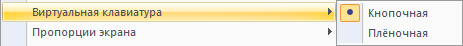
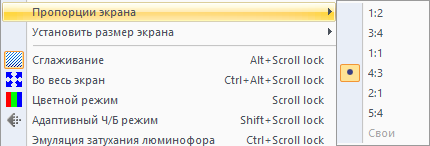
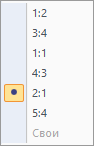
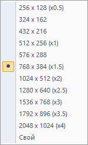

Руководство пользователя.
Эмулятор БК 0010(01) и БК 0011(М) для Windows XP / 7 / 8 / 10 / 11.
Версия
3.13.
Оглавление
- Аннотация
- Системные требования
- Характеристики
- Руководство по запуску программ
- Подробное описание функций эмулятора
- Полезные возможности.
- Приложение 1. Соответствия раскладки клавиатур ПК и БК и горячие клавиши
- Приложение 2. Описание ключей в файле «bk.ini»
- Приложение 3. Описание параметров командной строки
- Приложение 4. Описание вспомогательных утилит
Аннотация
Данный эмулятор работает под управлением 32/64 битной операционной системы Windows XP SP3 и выше (поддержка Windows XP будет прекращена после того, как микрософт полностью выпилит средства компиляции под Windows XP из Visual Studio, и минимальной ОС станет Windows 7), и эмулирует компьютеры «БК 0010(01)» и «БК 0011(М)» в различных конфигурациях. В состав эмулятора входят две утилиты «BK Disk Explorer» - утилита для работы с образами дисков БК и «HDD Image Maker» - утилита для создания образов винчестеров, применимых к контроллеру СМК-512. Образ винчестера имеет свой формат и жёстко заданный размер, определяемый параметрами: количество дорожек, головок, секторов на дорожке, в соответствии со спецификацией ATA.
Эмулятор распространяется в архиве, помимо исполняемого файла там находятся динамические библиотечные файлы рендеров экрана и анализатора огибающей звука, конфигурационный ini файл и следующие служебные папки:
|
Bin\ |
– директория по умолчанию для хранения программ для БК в формате bin. Обзор проводника начинается с этой папки. Пользуясь средствами навигации проводника, можно перемещаться и читать файлы из любого места вашего компьютера. |
|
Docs\ |
– документация к эмулятору. А так же разные полезные документы из комплекта документации к компьютерам БК10/11. |
|
Img\ |
– директория по умолчанию для хранения образов дискет для БК и образов HDD для БК. Обзор проводника начинается с этой папки. Пользуясь средствами навигации проводника, можно перемещаться и читать файлы из любого места вашего компьютера. |
|
Memory\ |
– записанные состояния памяти определённых конфигураций БК. |
|
Rom\ |
– прошивки ПЗУ. Это обязательная директория, с некоторым обязательным набором прошивок ПЗУ. Туда можно добавлять свои ПЗУ, но нельзя удалять или переименовывать базовые. Чтобы использовать своё ПЗУ вместо базового необходимо отредактировать файл bk.ini. (Поместить в директорию свой файл и задать в ini файле имя файла своего ПЗУ.) |
| Screenshots\ |
– директория, куда сохраняются скриншоты и захваченное видео. Для захвата видео эта директория обязательно должна существовать, иначе ffmpeg завершается с ошибкой параметров командной строки, т.к. не умеет создавать директории, заданные в пути создаваемого файла. |
|
Scripts\ |
– скрипты эмулятора. (Мало кому нужный рудимент. К тому же скриптовый движок крайне примитивен и почти не развивается.) |
|
Tapes\ |
– директория по умолчанию для хранения wav и tap файлов кассет для загрузки с магнитофона. Обзор проводника начинается с этой папки. Пользуясь средствами навигации проводника, можно перемещаться и читать файлы из любого места вашего компьютера. |
|
Tools\ |
– служебные утилиты. А так же любые другие пользовательские файлы, которые туда можно поместить и самостоятельно запускать. |
|
UserSaves\ |
– любые файлы, сохраняемые пользователем, если включена соответствующая опция. Если возникнет необходимость не смешивать новые файлы с файлами, уже находящимися в директориях Bin и Tapes. Или, допустим, имена совпадающие будут. |
Системные требования
Минимальные требования: Двухъядерный процессор, видеокарта с аппаратным ускорением OpenGL или Direct3D.
Рекомендуемые требования: Чем больше, тем лучше.
Обязательно наличие установленной библиотеки DirectX 9.0 runtime или более поздней версии, для эмуляции экрана БК с рендером Direct3D, с остальными рендерами - не обязательно.
Эмулятор на данный момент не точно совместим с реальной БК. Точность эмуляции составляет по оценкам автора примерно 90%. Но несмотря на это в нём правильно работает огромное количество программ, разработанных на БК. Данная оценка является субъективным мнением автора, основанном на сравнении работы программ на реальном железе и эмуляторе.
Убедительная просьба: если вы обнаружили какое-либо несоответствие или вы программировали на БК, и знаете некоторые нюансы или просто обнаружили откровенные ляпы в эмуляции, сообщить об этом автору. Адрес электронной почты указан на сайте, откуда скачан этот эмулятор, либо с которого вы читаете эту документацию, а также в окне "О программе". И это не Юрий Калмыков, хотя его почта так и оставлена в этом окне, как напоминание о родоначальнике этого эмулятора.
Автор считает своей целью оттачивание эмуляции БК вплоть до 99%, насколько это конечно возможно. Поэтому следующий автор продолжил дело и добавил эмуляцию БК11М, БК11 (без М), стандартного КНГМД и КНГМД А16М, а затем и СМК-512 и эмуляцию HDD. И Самарский контроллер НГМД+HDD. В дополнение к этому - эмуляцию музыкального сопроцессора YM-2149 (AY-3-8910), а затем не полную эмуляцию музыкальной приставки "Менестрель" (без генератора прерываний по вектору 100). И ко всему этому ещё и схему 2хAY с разными методами реализации подключения.
Все пожелания, замечания обязательно будут замечены и учтены. Но не обязательно применены в ближайшее время, потому что я иногда просто не знаю, как сделать данные фичи. Как узнаю, так сразу и сделаю.
Характеристики
Данная программа является программным эмулятором отечественных бытовых компьютеров БК 0010(01) и БК 0011(М). Поддерживаются конфигурации:
- БК 0010Ш без элементов поддержки локальной сети
- БК 0010-01 + стандартный БЕЙСИК «Вильнюс 1986»
- БК 0010-01 + блок МСТД (Фокал и подпрограммы тестов)
- БК 0010-01 + блок дополнительной памяти 32Кб
- БК 0010-01 + стандартный КНГМД + расширитель памяти 16Кб
- БК 0010-01 + блок КНГМД А16М
- БК 0010-01 + блок КНГМД СМК-512 + HDD
- БК 0010-01 + блок КНГМД + расширитель памяти 16Кб + SamaraHDD + HDD
- БК 0011 + блок МСТД
- БК 0011 + стандартный КНГМД
- БК 0011 + блок КНГМД А16М
- БК 0011 + блок КНГМД СМК-512 + HDD
- БК 0011 + стандартный КНГМД + SamaraHDD + HDD
- БК 0011М + блок МСТД
- БК 0011М + стандартный КНГМД
- БК 0011М + блок КНГМД А16М
- БК 0011М + блок КНГМД СМК-512 + HDD
- БК 0011М + блок КНГМД + SamaraHDD + HDD
Примечания.
- Для запуска конфигурации «БК 0011 + блок КНГМД А16М» необходимо при старте удерживать нажатой клавишу «4», для перехода в БОС БК11 и загрузки с дискеты вручную.
- Для запуска конфигурации «БК 0011 + блок КНГМД СМК-512» необходимо удерживать нажатыми клавиши «Шифт»+«4», для перехода в БОС БК11 и загрузки с дискеты или HDD вручную. Делается это следующим образом. Для загрузки с дискет можно воспользоваться командами БОС - 0B или 1B, для загрузки с дисковода A: или B: соответственно. А для загрузки с HDD всё сложнее. Нужно в регистр R0 поместить номер раздела, с которого надо загрузиться, делается командой БОС R0/ <число>, где число - это 2 - С:, 3 - D: и т.д., и кстати, 0 - это A:, 1 - B:, но с дискет можно проще загружаться. Затем нужно задать команду 160002G и загрузиться в АНДОС или МКДОС. Остальные ОС на БК11 не работают.
- ПЗУ контроллеров АльтПро А16М и СМК-512 используют вызовы подпрограмм из ПЗУ БОС БК 0011М, поэтому на БК 0011 не работают так, как задумано. Поэтому при использовании этих контроллеров на БК 0011 многие действия необходимо делать вручную.
Данный эмулятор корректно эмулирует все команды процессора БК, включая недокументированные команды: NOP с кодом 0260, команды останова, групповой установки и сброса битов состояния процессора, команды MARK, START, STEP, а также биты 11 и 10 слова состояния процессора. При эмуляции команд учитывается реальное время их выполнения, и оно примерно соответствует времени выполнения на реальной БК-0010. В секунду выполняется примерно 250 тыс. команд (точное значение зависит от самих команд и методов адресации). Также корректно эмулируются системные регистры, с учётом особенностей БК 0010 и БК 0011(М):
|
177660 |
– регистр состояния клавиатуры полностью |
|
177662 |
– регистр кода клавиатуры полностью |
|
177664 |
– регистр рулонного сдвига полностью |
|
177700, |
– регистры периферийного блока частично, но поведение регистра 177702 полностью |
|
177706, |
– регистры таймера полностью |
|
177714 |
– сам регистр эмулируется, но вывод регистра на внешние порты в/в ПК в настоящий момент не реализован. |
|
177716 |
– полностью |
|
177130 |
– регистр управления НГМД полностью |
|
177132 |
– регистр данных НГМД полностью |
Эмулятор корректно эмулирует найденный в 2019 году баг с флагом C для команд MOVB, SWAB, MFPS. Включение/отключение эмуляции бага задаётся ключом "Emulate C Bug" в ini-файле.
Эмулятор полностью эмулирует поведение периферийного регистра 177702, эмуляция задаётся ключом "Emulate 177702 behavior" в ini-файле, если она выключена, то становится возможным однозначно определить, где запущена программа - в эмуляторе или на реальном железе.
Эмулятор эмулирует различия процессора 1801ВМ1Г от 1801ВМ1А-В. Эмуляция процессора 1801ВМ1Г задаётся ключом "Emulate CPU 1801VM1G" в ini-файле, если выключена - эмулируется 1801ВМ1А, если включена - 1801ВМ1Г.
Так же, дополнительно ко всему, можно включить эмуляцию аппаратного выполнения инструкций семейств EIS и FIS. Эти опции включаются ключами "Emulate EIS Instructions Set" и "Emulate FIS Instructions Set" в ini-файле.
Опции, затрагивающие поведение процессора, доступны только через ручное редактирование ini-файла, т.к. они не предназначены для всеобщего пользования. Они нужны только тем, кому интересно экспериментировать, или в исследовательских целях.
Эмулируется звук динамика БК через систему Windows WaveOut, реализован захват звука для оцифровки аудиоплёнок через систему Windows WaveIn.
Реальное поведение клавиатуры БК, имеется возможность подключения
джойстика со стандартной распайкой через регистр параллельного порта.
(Прим. gid: что-то по исходникам этого не наблюдается,
джойстик просто эмулируется с клавиатуры)
Поддерживается два режима дисплея БК – чёрно-белый и цветной, причём чёрно-белый режим существует в двух вариантах: нормальном, и адаптированном. Адаптированный вариант даёт более реальное изображение (более схожее с чёрно-белым режимом БК) в полноэкранном режиме. Эмулируется рулонный сдвиг и режим расширенной памяти.
Имеется мощный (Прим. gid: не такой уж и мощный, хотелось
бы и мощнее) встроенный отладчик с возможностью установки точек останова
по условию (Прим. gid: нет таких, есть только простые
точки останова) и пошагового выполнения программы (данный отладчик
использовался автором в процессе создания и отладки этого эмулятора).
Корректно обрабатывается обращение по нечётным адресам, а также обрабатывается попытка записи в ПЗУ и обращения по несуществующим адресам.
Эмулятор поддерживает распечатку экрана БК на принтере в двух режимах обычном и инверсном (для экономии тонера), а также распечатку ассемблерного кода из ОЗУ в заданном диапазоне адресов.
Поддерживается возможность сохранения текущего состояния заданной конфигурации БК, а также сохранения файлов БК на жёстком диске ПК в широко распространённом бинарном формате «.bin», или в оригинальных звуковых форматах «.wav» (фактически является копией звуковых данных и по этой причине файл в данном формате занимает много места, примерно 44100 двойных слов, умноженных на количество секунд) и «.tap» (специально изобретённый для данного эмулятора формат, файлы в данном формате примерно в 60 раз меньше чем аналогичные в «.wav»). Этот формат не приспособлен для хранения файлов с защитами от копирования и нестандартными модуляциями.
Реализована возможность чтения данных с кассет БК. Вывод из звуковых файлов дублируется на бит 5 (код 040) регистра 177716. Имеется встроенный менеджер кассет БК с возможностью конвертации одного формата в другой, а также захватом с линейного входа звуковой платы.
Эмулируется работа с НГМД. Поддерживается формат образа дискет БК с расширениями «.img», «.bkd» и «.dsk» (что по сути есть одно и то же, просто разные люди по разному именовали образы дискет). В настоящий момент поддерживается до четырёх приводов одновременно на стандартном КНГМД и двух - на контроллерах АльтПро.
Для контроллера СМК-512 эмулируется HDD в соответствии со стандартом ATA. Реализован IDE канал, поддерживающий два HDD - Master и Slave. Но т.к. в прошивке СМК-512 не реализована работа с двумя винчестерами, корректность работы с ними не проверена.
Встроенный отладчик позволяет отлаживать запущенные программы, просматривать и изменять на ходу текущие значения в памяти и регистрах, редактировать ассемблерный текст, а также устанавливать точки останова.
Рис.1. Общий вид эмулятора, сокращённый вид.
Рис.2. Общий вид эмулятора, полный вид.
Главное окно – это окно представляет экран БК. В любой момент клик мышки на этом окне приводит к перемещению фокуса ввода клавиатуры с ПК на БК. Вывод в данное окно производится в зависимости от выбранного рендера с помощью OpenGL, Direct2D, VFW или Direct3D и в большинстве случаев производится аппаратно, но не всегда. Алгоритм интерполяции при уменьшении окна, зависит от драйвера конкретной видеокарты. По этой причине качественное изображение не всегда гарантируется.
Главное меню – основное меню программы, состоящее из следующих пунктов:
|
|
– операции загрузки и сохранения данных эмулятора, печать, скриншот. |
|
|
– выбор нужной конфигурации эмулируемой БК. |
|
|
- управление конфигурацией |
|
|
– различные опции эмулятора. |
|
|
– команды встроенного отладчика. |
|
|
– управление окнами эмулятора и внешним видом. |
|
|
– вызов некоторых, определённых, вспомогательных утилит. |
|
|
– информация об эмуляторе. |
Панели инструментов – некоторые часто используемые команды выведены на панели инструментов. Большинство представленных там команд дублируют соответствующие пункты меню. Клавиша Alt перехвачена для эмуляции клавиши АР2. Поэтому все стандартные сочетания горячих клавиш оконных приложений Windows больше не работают.
Все команды разбиты на три группы, по трём панелям инструментов, и есть ещё четвёртая, самостоятельная панель инструментов вне группы:
- Стандартная
-
Вид панели:
Описание команд будет представлено ниже. Здесь стоит сказать, что на данной панели представлено четыре кнопки с выпадающим меню, посредством которых выбирается и монтируется или отмонтируется образ дискеты в соответствующий дисковод. Все остальные кнопки дублируют соответствующие пункты меню.
При нажатии на иконку дискеты 5.25" появляется диалог выбора образа, который будет примонтирован в заданный привод.
Рис.3. Диалог выбора образа.
Обзор образов начинается с директории по умолчанию, заданной ключом «IMG directory» в файле «bk.ini», но возможен выбор образа в любом месте компьютера, даже находящегося на сетевых дисках.
При нажатии на стрелочку вниз в правой части иконки появляется выпадающее меню, с возможными действиями над образом в приводе. Если в дисководе было пусто, то отобразится меню следующего вида:
Всего два пункта: "Выгрузить" и имя примонтированного образа, для пустого дисковода - пусто. Скрывать пункт "Выгрузить" для пустого привода было сочтено нецелесообразным, т.к. выпадающее меню получалось уж совсем непонятным.
Если в дисководе был примонтирован какой-либо образ, то появится такое меню:
Внизу меню отображается имя файла примонтированного образа, и два возможных действия: "Выгрузить" - отмонтировать образ, т.е. вынуть дискету из дисковода. И "Открыть в BKDE" - передать файл образа в утилиту BKDE для редактирования. Если при запуске эмулятора, он не найдёт утилиту BKDE в директории "Tools", то пункт "Открыть в BKDE" в меню не появится. На время работы BKDE эмулятор приостанавливается полностью, это выглядит как полное зависание программы. Если при этом BKDE аварийно завершить, или прибить в диспетчере задач, эмулятор так в таком состоянии и останется. Его можно будет только так же прибить в диспетчере задач. Так что пользоваться с осторожностью. И естественно, после внесения изменений в образ, эмулятор ничего не будет об этом знать, так что обновление данных для БКшных ОС - задача пользователя.
- Звук
-
Вид панели:
Описание команд будет представлено ниже. На данной панели присутствует слайдер, для быстрого доступа к регулировке громкости звука эмулятора. Все остальные кнопки дублируют соответствующие пункты меню.
- Отладка
-
В процессе работы
Во время отладки
Описание команд будет представлено в подробном описании отладчика. (которого нигде нет, а писать самостоятельно пока нет желания. Вкратце - обычные стандартные команды отладчика)
- Захват видео
-
Вид панели:
Это единственная панель, команд которой вообще нет ни в каком меню, подробнее о функциях читайте в разделе Захват видео.
- Панель состояния
-
На данной панели отображаются текущие внутренние параметры эмулятора:
- Scr: X x Y – отображается текущий размер экрана. 2048 х 1536 - максимум, размер экрана свободно масштабируется в сторону уменьшения, для увеличения существует полноэкранный режим. При повсеместном распространении 8K мониторов эта ситуация будет изменена.
- FPS: N – текущее количество кадров в секунду. Это плавающий параметр, из-за того, что частота кадров БК - 48,8Гц, его значение постоянно колеблется между числами 48 и 50. Если долго отличается от заданного, то существует два объяснения. Первое: если оно больше – то это значит, что что-то не так с Windows или материнской платой. Главным образом из-за того, что полностью отсутствует или неисправна звуковая подсистема. Второе: если оно меньше – это значит, что ваш компьютер не справляется. Обычно это происходит от того, что какое-то другое приложение активно использует ресурсы процессора, но может быть и действительно - ваш компьютер слишком слаб.
- CPU: Z Hz – текущая частота работы процессора. Её можно произвольно увеличивать / уменьшать в заданных пределах, либо из меню с шагом 1000 Гц, либо из панели дампа регистров произвольно.
- Uptime hh:mm:ss. – внутренние часы, показывают, сколько времени запущена программа. Зачем это нужно, не знаю, но убирать не хочется.
Руководство по запуску программ
Загрузка и запуск .bin файлов на БК 0010(01)
После запуска эмулятора в любой конфигурации БК 0010(01) без дисковода, первое, что необходимо сделать для запуска программы в кодах, это перейти в монитор БК. А программы Бейсика или Фокала в формате .bin загружаются обычными способами с помощью команд Бейсика или Фокала. Как это сделать, нужно читать в соответствующих руководствах: 00001-01.34.09 - Программное обеспечение микро-ЭВМ "Электроника БК0010". "Электроника БК0010Ш". Язык "Бейсик". Руководство оператора. Глава 6. Или 00009-01.90.01 - Микро-ЭВМ "Электроника БК 0010-01". Программное обеспечение Фокал. Руководство пользователя. Глава 13.
Монитор визуально отличается своим приглашением ввода пользователя
которое выглядит как вопросительный знак «?».
Из БЕЙСИКа выход в монитор осуществляется командой «МО
 »
(MONIT). Из Фокала можно выйти по команде «P
M
»
(MONIT). Из Фокала можно выйти по команде «P
M  »(P
пробел M). Монитор БК поддерживает следующие команды:
»(P
пробел M). Монитор БК поддерживает следующие команды:
От «А» до «K»
 - переход
обратно в Бейсик или Фокал, в зависимости от конфигурации. На самом деле
происходит вызов подпрограммы по адресу 120000.
В общем случае, по данному адресу может находится что угодно пользовательское.
- переход
обратно в Бейсик или Фокал, в зависимости от конфигурации. На самом деле
происходит вызов подпрограммы по адресу 120000.
В общем случае, по данному адресу может находится что угодно пользовательское.
«M
 »
- загрузка файла с магнитофона. В эмуляторе загрузка осуществляется с диска
ПК. По умолчанию из директории «Bin».
Имя данной директории можно поменять, изменив ключ «Program
directory» в файле «bk.ini».
На приглашение «Имя ?» можно просто
нажать «
»
- загрузка файла с магнитофона. В эмуляторе загрузка осуществляется с диска
ПК. По умолчанию из директории «Bin».
Имя данной директории можно поменять, изменив ключ «Program
directory» в файле «bk.ini».
На приглашение «Имя ?» можно просто
нажать « »,
после чего появится стандартный диалог открытия файла. Если этого не произошло,
то нужно посмотреть, включена ли опция «». И если выключена - включить, нажать кнопку «СТОП»
и повторить попытку. Также вместо простого нажатия «
»,
после чего появится стандартный диалог открытия файла. Если этого не произошло,
то нужно посмотреть, включена ли опция «». И если выключена - включить, нажать кнопку «СТОП»
и повторить попытку. Также вместо простого нажатия « »,
можно набрать имя запускаемой программы. Файлы программ обычно имеют расширение «.bin».
»,
можно набрать имя запускаемой программы. Файлы программ обычно имеют расширение «.bin».
«S [адрес]
 »
– запуск загруженной программы с указанного адреса. Запускает только что
загруженную программу с адреса, указанного после команды «S».
Например, команда «S 1000
»
– запуск загруженной программы с указанного адреса. Запускает только что
загруженную программу с адреса, указанного после команды «S».
Например, команда «S 1000
 »
запускает программу с адреса 1000 (типичный адрес
запуска программ на БК). Также можно после «S»
сразу нажать «
»
запускает программу с адреса 1000 (типичный адрес
запуска программ на БК). Также можно после «S»
сразу нажать « »
ничего не указывая. При этом программа начнёт выполнение с адреса, указанного
в заголовке загруженного файла. Это наиболее рекомендуемый способ запуска,
т.к. далеко не все программы имеют адрес запуска 1000.
Только для конфигураций БК 0010 + КНГМД (БК 0010(01) с FDD): команда «S
160000» запускает начальный загрузчик системной дискеты. Поиск
системной дискеты осуществляется сначала в приводе «A:»,
а потом в приводе «B:».
»
ничего не указывая. При этом программа начнёт выполнение с адреса, указанного
в заголовке загруженного файла. Это наиболее рекомендуемый способ запуска,
т.к. далеко не все программы имеют адрес запуска 1000.
Только для конфигураций БК 0010 + КНГМД (БК 0010(01) с FDD): команда «S
160000» запускает начальный загрузчик системной дискеты. Поиск
системной дискеты осуществляется сначала в приводе «A:»,
а потом в приводе «B:».
«Т
 »
– запуск программы тестов, зашитой в ПЗУ. Данная команда запускает тесты
различных узлов БК. Тесты зашиты в ПЗУ блока МСТД. В эмуляторе данная конфигурация
называется «БК 0010-01 + блок Фокал-МСТД». На самом деле
команда вызывает подпрограмму, зашитую в ПЗУ по адресу
160100, и в других конфигурациях её действие может
отличаться.
»
– запуск программы тестов, зашитой в ПЗУ. Данная команда запускает тесты
различных узлов БК. Тесты зашиты в ПЗУ блока МСТД. В эмуляторе данная конфигурация
называется «БК 0010-01 + блок Фокал-МСТД». На самом деле
команда вызывает подпрограмму, зашитую в ПЗУ по адресу
160100, и в других конфигурациях её действие может
отличаться.
Более подробно об этом читайте в документе 00001-01.32.03.
Клик на любом «.bin» или «.msf» файле приводит к запуску эмулятора (если он не загружен), загрузке содержимого этого файла и запуску на исполнение. Клик на файле скрипта, также приводит к запуску данного скрипта. Скрипты могут быть использованы для автоматизации набора часто используемых команд или для быстрого набора текста. Скрипты обычно имеют расширение «.bkscript».
Но гораздо проще воспользоваться эмулятором дисковода, загружаться с образа дискеты и использовать возможности файлового менеджера какой-нибудь ОС, которая находится на дискете.
Загрузка и запуск .bin файлов на БК 0011
Для БК11 так же реализована эмуляция чтения/записи с магнитофона как для БК10. Но тут немного сложнее. Чтобы хоть как-то начать пользоваться БКшкой нужно прочитать руководство 00008-01.32.01. Потому что у БК0011 без М очень особенный управляющий монитор. Там внешне команды выглядят как в БК0011М, но есть нюансы.
Чтобы запустить Бейсик, нужно в мониторе набрать следующие команды:
11;1С
100000G
Подробнее см. в 00008-01.34.04 - Персональная микро-ЭВМ "Электроника МС0513". Программное обеспечение. Бейсик. Руководство оператора. (там есть в том числе и описание, как зайти и выйти в Бейсик для БК 0011 без М. Подсказка: выход из Бейсика в монитор делается командой SYS[TEM], а не MO[NITOR] как в остальных БК).
Чтобы загрузить программу, нужно набрать такую команду:
XXXXXXL
Где XXXXXX - адрес загрузки.
Но перед этим, необходимо установить нужные страницы в окна, монитор этим не озабочивается.
После подачи команды будет запрошено имя файла, и об особенностях форматов имени настоятельно рекомендуется почитать руководство 00008-01.32.01.
Загрузка и запуск .bin файлов на БК 0011М
Для БК11М, аналогично, реализована эмуляция чтения/записи с магнитофона.
Тут всё уже более дружественно к пользователю, при запуске любой конфигурации
БК11М без дисковода, сразу запускается Бейсик. Выход из него делается командой «МО
 »
(MONIT). Подробнее почитать о командах монитора можно в руководстве
00015-01.32.01.
»
(MONIT). Подробнее почитать о командах монитора можно в руководстве
00015-01.32.01.
Загрузка программы делается так же, как и в БК11:
XXXXXXL
Где XXXXXX - адрес загрузки.
Так же перед этим нужно установить нужные страницы в окна. И после подачи команды, так же будет запрошено имя загружаемого файла. Если сразу нажать Ввод, т.е. пустое имя, то будет загружаться первый найденный файл.
Загрузка и запуск .wav, .tap файлов на БК 0010(01), БК 0011(M)
Чтобы загружать .wav, .tap файлы, нужно отключить эмуляцию чтения с магнитофона. А чтобы записывать - соответственно отключить эмуляцию записи на магнитофон. Для этого нужно выполнить или убедиться, что выполнены следующие действия:
- Необходимо отключить в опциях пункт «». Если нужна ещё и запись на магнитофон - отключить «»
- После этого в панели инструментов и меню «» станет доступен пункт «»
- В мониторе или Бейсике или где-либо ещё, соответствующими командами запускаем загрузку файла и жмём на «»
- Выбираем нужный файл (.tap, .wav или .bin, для последнего - нужно перейти в соответствующую директорию) и слушаем, как он загружается.
Прервать воспроизведение можно кнопкой «Стоп» на панели управления чтением/записью лент.
Подробное описание функций эмулятора
Меню «Файл»
-
– загрузить ранее сохранённое состояние конфигурации БК с диска. Файлы состояния БК имеют расширение «.msf», и по умолчанию хранятся в директории «Memory». Путь к данной директории можно изменить в файле настроек «bk.ini», поменяв строку с именем ключа «Memory directory». Эмулятор считывает конфигурацию, слепок памяти БК и состояние всех регистров. После загрузки выполнение программы тут же продолжается с записанного места, причём именно в нужной конфигурации (т.е. если состояние было сохранено как БК 0010-01, а текущая конфигурация БК 0010-01 + блок Фокал-МСТД, то будет выбрана конфигурация с Бейсиком). В диалоге выбора файла состояния имеется окно «Preview», в котором показывается уменьшенная копия экрана БК на момент сохранения.
Рис.4. Диалог выбора и загрузки состояний.
-
– сохранить текущее состояние конфигурации БК на диск. Файлы состояния БК имеют расширение «.msf», и по умолчанию хранятся в директории «Memory». Путь к данной директории можно изменить в файле настроек «bk.ini», поменяв строку с именем ключа «Memory directory». Эмулятор сохраняет конфигурацию, записывает слепок памяти БК и состояние всех регистров. После записи выполнение программы продолжается дальше.
ОБРАТИТЕ ОСОБОЕ ВНИМАНИЕ! Для того, чтобы сохранения были переносимы между компьютерами и просто различными экземплярами эмулятора, все монтируемые образы дискет и HDD должны находится в директории по умолчанию для образов. Директорией по умолчанию считается директория, заданная в параметре IMG directory в секции [Directories] файла настроек «bk.ini».
-
– загрузить содержимое кассеты и запустить на воспроизведение. Файлы кассет БК могут храниться в двух форматах: «.wav» - Microsoft PCM Wave 8/16бит Моно/Стерео с любой частотой дискретизации, поддерживаемой форматом или «.tap» - собственном формате Tape. При выделении файла показывается имя записи, адрес загрузки и длина записанного файла. По умолчанию файлы кассет лежат в каталоге «Tapes». Путь к данной директории можно изменить в файле настроек «bk.ini», поменяв строку с именем ключа «Tapes directory». После нажатия кнопки «Открыть» файл загружается и воспроизводится через звуковую карту. Загрузка таких файлов выполняется точно также, как на реальной БК. Прервать воспроизведение не нужного или ошибочного файла можно кнопкой «Стоп» на панели управления чтением/записью лент. Файлы в формате «.bin» так же можно загрузить как файл с кассеты.
-
– сделать снимок экрана эмулятора БК. По умолчанию скриншоты помещаются в директорию «Screenshots», имя директории можно поменять в файле настроек «bk.ini», поменяв строку с именем ключа «Screenshots directory». Формат скриншота - png, разрешение и форма управляется опцией «Origin screenshot size». Имя файла скриншота имеет следующий вид "screenshot_xxx.png", где xxx - инкрементный счётчик. Его значение сохраняется в файле настроек «bk.ini», в ключе «Screenshot number». Когда его значение достигнет невероятно больших величин, ему можно вручную задать желаемое значение.
Опция, управляющая размером и формой создаваемого скриншота, «Origin screenshot size», находится в файле настроек «bk.ini» в секции «[Main]», её значение по умолчанию «No», т.е. она выключена. Когда опция включена, то скриншоты создаются оригинального размера, т.е. такого, какого формируется текстура кадра экрана перед выводом на экран. Если опция выключена, то скриншоты создаются размером как у viewport'а (т.е. текущего размера экрана, или последнего заданного размера экрана) путём масштабирования оригинальной текстуры, со сглаживанием в процессе увеличения размеров.
-
– распечатка экрана БК или ассемблерного кода из ОЗУ на принтере. Появляется модифицированный диалог настройки принтера, с возможностью выбора принтера и изменения его стандартных настроек. Также предоставляется возможность выбора двух функций:
- «Print screen» – распечатка экрана БК в двух режимах. Если в поле «Inverse» не стоит галочка, то распечатка экрана будет производиться в обычном режиме, т.е. чёрный экран и на бумаге будет распечатан чёрным, а буквы белым или серым цветами, что приводит к неэкономному расходу тонера. Если же в поле «Inverse» стоит галочка, то экран БК будет распечатан в инвертированном режиме, экран белым (т.е. никаким), а буквы чёрным цветами. Соответственно тонера израсходуется намного меньше. Рекомендуется ставить эту опцию при распечатке большого количества листов для экономии тонера, и не ставить если необходимо получить более похожую на реальный экран БК картинку.
- «Print code» – распечатка ассемблерного текста из ОЗУ БК. В поле «From address» нужно ввести начальный адрес программы в ОЗУ БК, а в поле «to» конечный адрес. При этом в окне «Pages» показывается точное (не примерное) рассчитанное количество листов бумаги, необходимое для распечатки всего листинга программы, что очень полезно для оценки расхода бумаги для распечатки большого кода.
Для обеих возможностей распечатки «Print screen» и «Print code», если необходимо, можно указать название программы или любую другую полезную информацию, которая будет распечатана в левом верхнем углу каждого листа. Также на каждом листе будет распечатан его номер и общее количество страниц программы.
-
– настройка параметров принтера.
-
– выход из эмулятора. По данной команде осуществляется выход из эмулятора так же, как если кликнуть мышкой по кнопке с крестиком в правом верхнем углу окна. Alt-F4 не работает, т.к. это обычное сочетание клавиш АР2 + для БК.
Меню «Конфигурация»
-
– запуск конфигурации БК 0010Ш с версией ПЗУ Фокала №84, рассчитанной на работу в составе КУВТ в локальной сети. В остальном, ничем не отличается от конфигурации БК 0010-01+МСТД. Карта памяти:
Адреса Описание Объём Кб. 000000 – 000377
прерывания и системные данные
0.5
000400 – 037777
ОЗУ пользовательской программы
15.5
040000 – 077777
ОЗУ экрана
16.0
100000 – 117777
Монитор
8.0
120000 – 137777
ПЗУ Фокала
8.0
140000 – 157777
Не используется
8.0
160000 – 177577
ПЗУ тестов
7.5
177600 – 177777
область системных регистров
0.5
-
– запуск обычной конфигурации БК 0010-01 с БЕЙСИКом «Вильнюс 1986». Данная версия БЕЙСИКа была хорошо документирована и на 80% совпадает по синтаксису с GW Basic на ПК. Карта памяти:
Адреса Описание Объём Кб. 000000 – 000377
прерывания и системные данные
0.5
000400 – 037777
ОЗУ пользовательской программы
15.5
040000 – 077777
ОЗУ экрана
16.0
100000 – 117777
Монитор
8.0
120000 – 137777
1-е ПЗУ БЕЙСИКа
8.0
140000 – 157777
2-е ПЗУ БЕЙСИКа
8.0
160000 – 177577
3-е ПЗУ БЕЙСИКа
7.5
177600 – 177777
область системных регистров
0.5
-
– запуск конфигурации БК 0010-01 с блоком МСТД – ПЗУ с интерпретатором Фокала и тестами. Карта памяти:
Адреса Описание Объём Кб. 000000 – 000377
прерывания и системные данные
0.5
000400 – 037777
ОЗУ пользовательской программы
15.5
040000 – 077777
ОЗУ экрана
16.0
100000 – 117777
Монитор
8.0
120000 – 137777
ПЗУ Фокала
8.0
140000 – 157777
Не используется
8.0
160000 – 177577
ПЗУ тестов
7.5
177600 – 177777
область системных регистров
0.5
-
– запуск конфигурации БК 0010-01 с дополнительным блоком ОЗУ 32 Кб. Данный блок ОЗУ расширял стандартные 16 Кб ОЗУ, дополнительными 32 Кб, причём общий объём ОЗУ становился равным 48 Кб. Блок проецировался на адреса памяти 120000 – 140000. Карта памяти:
Адреса Описание Объём Кб. 000000 – 000377
прерывания и системные данные
0.5
000400 – 037777
ОЗУ пользовательской программы
15.5
040000 – 077777
ОЗУ экрана
16.0
100000 – 117777
Монитор
8.0
120000 – 137777
Одна из 8 кб страниц блока ДОЗУ 32К
8.0
140000 – 157777
Не используется
8.0
160000 – 177377
Не используется
7.5
177400 – 177777
область системных регистров
0.5
Для подключения заданной страницы памяти нужно записать номер страницы по адресам 100000-117777. Всего 4 страницы: 0,1,2,3. Но на самом деле можно записывать вообще любое число, значимы только два младших бита этого числа, остальные игнорируются.
-
– запуск БК 0010-01 со стандартным контроллером НГМД и блоком ДОЗУ 16 Кб. В этой конфигурации эмулируется БК с подключённым к ней стандартным контроллером НГМД. Максимальное число приводов для данного контроллера - 4. Их имена «A:» и «B:», «C:» и «D:». Соответствующие имена образов дисков можно указать в файле «bk.ini». Имена ключей: «Drive A:», «Drive B:», «Drive C:» и «Drive D:».
-
– запуск БК 0010-01 с контроллером НГМД А16М и блоком ДОЗУ 16 Кб. В этой конфигурации эмулируется БК с подключённым к ней контроллером А16М. Максимальное число приводов для данного контроллера - 2. Их имена «A:» и «B:». Соответствующие имена образов дисков можно указать в файле «bk.ini». Имена ключей: «Drive A:», «Drive B:». Ключи «Drive C:» и «Drive D:» игнорируются. Обычно образ диска имеет расширение «.img» или «.bkd», но может иметь и другое расширение. Естественно, что для загрузки операционной системы диск должен быть загрузочным. Все изменения, правила запуска файлов и работы с ними читайте в руководстве к конкретной операционной системе. Начальная карта памяти:
Адреса Описание Объём Кб. 000000 – 000377
прерывания и системные данные
0.5
000400 – 037777
ОЗУ пользовательской программы
15.5
040000 – 077777
ОЗУ экрана
16.0
100000 – 117777
Монитор
8.0
120000 – 137777
1-я страница расширенного ОЗУ НГМД
8.0
140000 – 157777
2-я страница расширенного ОЗУ НГМД
8.0
160000 – 176777
ПЗУ контроллера НГМД
7.5
177000 – 177777
область системных регистров
0.5
В соответствии с режимами А16М карта памяти может изменяться.
-
– запуск БК 0010-01 с контроллером НГМД СМК-512 и блоком ДОЗУ 512 Кб с поддержкой винчестера. Количество дисководов здесь 2, «A:» и «B:», значения ключей «Drive C:» и «Drive D:» игнорируются, т.к. приоритет отдан винчестеру.
-
– запуск БК 0010-01 со стандартным контроллером НГМД и блоком ДОЗУ 16 Кб и самарским контроллером винчестера. Количество дисководов здесь 2, «A:» и «B:», значения ключей «Drive C:» и «Drive D:» игнорируются, т.к. приоритет отдан винчестеру. Конфигурация работоспособна, но при наличии более удобных контроллеров АльтПро представляет чисто академический интерес.
-
– Запуск БК 0011 в стандартной конфигурации + блок тестов МСТД, для запуска тестов надо набрать 160000G. Для запуска бейсика надо набрать 11;1C
 100000G.
100000G. -
– Запуск БК 0011 с контроллером НГМД с прошивкой 253. Но из-за отсутствия софта, эта конфигурация малополезна. Вообще, БК 0011 добавлен для того, чтобы иметь представление, что это такое.
-
– Запуск БК 0011 с контроллером НГМД А16М и блоком ДОЗУ 16 Кб. Для запуска этой конфигурации необходимо при старте удерживать нажатой клавишу «4», для перехода в БОС БК11 и загрузки с дискеты вручную. Работоспособность не гарантируется, потому что контроллеры АльтПро не рассчитаны на работу с компьютерами БК 0011.
-
– Запуск БК 0011М с контроллером НГМД СМК-512 и блоком ДОЗУ 512 Кб с поддержкой винчестера. Для запуска этой конфигурации необходимо удерживать нажатыми клавиши «Шифт»+«4», для перехода в БОС БК11 и загрузки с дискеты вручную. Работоспособность не гарантируется, потому что контроллеры АльтПро не рассчитаны на работу с компьютерами БК 0011.
-
– Запуск БК 0011 со стандартным контроллером НГМД с прошивкой 253 и самарским контроллером винчестера. Конфигурация работоспособна, но из-за отсутствия софта, эта конфигурация малополезна и представляет чисто академический интерес.
-
– Запуск БК 0011М в стандартной конфигурации + блок тестов МСТД, для запуска тестов надо выйти из бейсика в монитор и набрать 160000G.
-
– Запуск БК 0011М с контроллером НГМД с прошивкой 326.
-
– Запуск БК 0011М с контроллером НГМД А16М и блоком ДОЗУ 16 Кб.
-
– Запуск БК 0011М с контроллером НГМД СМК-512 и блоком ДОЗУ 512 Кб с поддержкой винчестера.
-
– Запуск БК 0011М со стандартным контроллером НГМД с прошивкой 326 и самарским контроллером винчестера. Здесь более интересно, поскольку софт для контроллера работает только из-под CSIDOS.
Меню «Управление»
-
– перезагрузка БК. При выборе данного пункта меню перезапускается текущая конфигурация эмулятора, при этом осуществляется так называемый «мягкий» перезапуск, т.е. не происходит полной потери данных в памяти БК и её регистрах. Выполнение программ начинается с адреса, заданного в старших битах регистра 177716. На реальной БК10 это значение равно 100000, БК11(М) - 140000. При необходимости его можно поменять в файле конфигурации «bk.ini», изменив значение ключа «CPU start address». По умолчанию, значение в файле конфигурации равно 0, т.е. берётся стандартный адрес из соответствующей конфигурации. После перезагрузки восстанавливается конфигурация, а также все точки останова.
Реализована модификация СУ+Ресет. Это когда на БК 0011(М) необходимо перезагрузиться по адресу 100000. Для этого необходимо удерживать нажатой клавишу СУ (Ctrl) при выполнении команды только из панели инструментов. Данная модификация не работает с контроллерами А16М и СМК-512, т.к. эти контроллеры помещают в регистр 177716 свои стартовые значения.
-
– перезагрузка БК 0011(М) с адреса 100000. Специальный пункт меню для поддержки эмуляции модификации СУ+Ресет, для того, чтобы можно было перезагрузиться так же из меню «Конфигурация», и с помощью комбинации горячих клавиш, а не только кликая мышкой по иконке на панели инструментов.
-
– специальный режим перезапуска только для контроллера А16М. Работает только в конфигурациях с контроллером А16М, в остальных конфигурациях полностью аналогичен пункту . На контроллере А16М обычный ресет работает, как описано выше, но если нужно, чтобы перезапуск начинался со старта ПЗУ АльтПро, где обрабатываются специальные комбинации клавиш и происходит установка режима работы контроллера А16М, то необходим длинный ресет. На реальном устройстве - пятисекундное удержание кнопки Ресет перед тем, как её отпустить.
- - Выдать единичный импульс на вход процессора IRQ2. Сгенерируется прерывание по вектору 100. Результат будет зависеть от того, задан ли обработчик вектора прерывания.
- - Выдать единичный импульс на вход процессора IRQ3. Сгенерируется прерывание по вектору 270. Результат будет зависеть от того, задан ли обработчик вектора прерывания.
-
– увеличить частоту процессора на величину, зависящую от комбинации нажатых клавиш-модификаторов Shift, Ctrl, Alt. По умолчанию, среднее количество команд, обрабатываемых процессором, составляет 250 000 в секунду, что соответствует реальной скорости БК.
Примечание: скорость воспроизведения файлов с ленты БК остаётся строго постоянной. По этой причине сильное изменение скорости процессора может привести к генерации .wav файла, который потом никак и ничем невозможно будет прочитать.
-
– уменьшить частоту процессора на величину, зависящую от комбинации нажатых клавиш-модификаторов Shift, Ctrl, Alt. По умолчанию, среднее количество команд, обрабатываемых процессором, составляет 250 000 в секунду, что соответствует реальной скорости БК.
Примечание: скорость воспроизведения файлов с ленты БК остаётся строго постоянной. По этой причине сильное изменение скорости процессора может привести к ошибкам чтения.
-
– установить частоту, заданную конфигурацией БК. Это будет либо частота конфигурации по умолчанию - для БК 0010(01) это 3 МГц, для БК 0011(М) - 4 МГц, либо частота, заданная пользователем. Частоту по умолчанию можно переопределить в файле «bk.ini» в ключе «CPU frequency». Этот ключ переопределяет частоту процессора заданной конфигурации, если определён в кастомной секции, либо глобально, частоту всех конфигураций, если задан в основной секции. Значение по умолчанию - 0, что означает, что берётся предопределённое значение частоты из конфигурации. Своё значение следует задавать в герцах.
-
– установить максимально возможную частоту, которую позволяет эмуляция. Это кнопка-переключатель, т.е. нажатие - включает максимальную частоту, а отжатие - выключает и возвращает то значение, которое было до нажатия кнопки.
Для пунктов меню и , горячих клавиш для них, а так же дублирующих их кнопок на панели дампа регистров действуют следующие модификаторы:
- Без модификаторов: ± 1000 Гц (1 кГц)
- Shift: ± 1 Гц
- Ctrl: ± 10 Гц
- Ctrl+Shift: ± 100 Гц
- Alt: ± 1 МГц
- Alt+Shift: ± 10000 Гц (10 кГц)
- Ctrl+Alt: ± 100000 Гц (100 кГц)
- Ctrl+Alt+Shift: *10 или /10 текущую частоту
Меню «Опции»
-
– Открывается диалог, в котором можно изменить через пользовательский интерфейс, а не только вручную практически все параметры опций и настроек эмулятора.
В первой вкладке, "Приводы и параметры" можно задать образы дискет и HDD для заданной конфигурации. И изменить несколько параметров.
Адрес начального запуска - это адрес, который подменяет стартовый адрес из регистра 177716, т.е. значимый там только старший байт, младший байт игнорируется. Число 0 означает, что будет использовано стандартное значение по умолчанию для заданной конфигурации. Адрес записывается в восьмеричной системе счисления.
Начальная частота процессора - это частота, которая подменяет стандартную рабочую частоту. Число 0 означает, что будет использовано стандартное значение по умолчанию для заданной конфигурации.
Адрес дизассемблера и адрес дампа памяти - значения из соответствующих окон. Задаются в восьмеричном виде. Эти два параметра не требуют перезапуска конфигурации, все остальные - требуют. Адрес дампа памяти задаётся только для первого окна дампа, как задавать для всех окон, я пока не придумал.
Рис.5. Диалог настроек эмулятора.
Во второй вкладке можно изменить тип рендера, частоту дискретизации звука, модель музыкального сопроцессора и его рабочую частоту. А также некоторые другие параметры.
Рабочую частоту можно выбрать как из заданного списка, так и вручную, вписав своё значение. Все значения меньше 1 МГц и больше 2 МГц заменяются на частоту по умолчанию 1714286 Гц.
Чекбокс "Большие иконки панели инструментов" влияет на пользовательский интерфейс программы и требует перезапуска всего эмулятора.
Рис.6. Диалог настроек эмулятора.
Это единственное место, кроме ручной правки ini файла, где можно включить/выключить поддержку конфигурации 2хAY.
Чекбокс "Большие иконки панели инструментов" влияет на пользовательский интерфейс программы и требует перезапуска всего эмулятора.
Чекбокс "Дата и Время вместо номера" меняет формат имени файла скриншота. Вместо инкрементного номера будет задаваться штамп времени.
В третьей вкладке можно изменить текущие опции, которые доступны в меню "" и "" и некоторые параметры. Все они не требуют перезагрузки конфигурации.
Рис.7. Диалог настроек эмулятора.
Кнопка "ОК, Всё устраивает" - это отмена всех сделанных изменений и закрытие диалога. Кнопка "Сохранить изменения" вызывает либо просто изменение значений опций, либо перезапуск конфигурации, всё зависит от типа изменённого параметра.
-
- опция вызывает диалог редактирования палитр. Для тех, кому не нравится стандартный набор цветов и хочется чего-то такого этакого.
Рис.8. Диалог редактирования палитр.
Можно раздельно задать разные палитры для стандартного чёрно-белого режима и для адаптивного, хотя это фактически не верно, просто есть такая возможность в принципе. Но пресеты палитр из выпадающего списка задают один пресет для обеих чёрно-белых палитр одновременно, потому что чёрно-белый режим один.
Для каждой конфигурации сохраняется свой набор изменённых палитр.
Так же, есть возможность сохранять настройки палитр в отдельный файл. Это обычный ini файл, и в нём сохраняются настройки палитр в точно таком же виде, как и в файле настроек bk.ini. Палитры сохраняются в директорию по умолчанию UserSaves.
-
- опция вызывает диалог редактирования управляющих клавиш джойстика.
Рис.9. Диалог редактирования настроек джойстика.
Клик мышкой в поле названия клавиши - задать свою клавишу, в выпадающем списке можно задать свой набор битов в порту 177714 для каждого действия джойстика. Никаких проверок ни на что не делается. Если задать клавишу, которая назначена горячей клавишей в меню, то вызов меню имеет приоритет и клавиша джойстика работать не будет.
-
– данная опция включает эмуляцию динамика реальной БК через звуковую карту. Обновление звуковых буферов осуществляется 50 раз в секунду. При этом звук довольно хорошо синхронизирован с изображением на экране, т.е., например, между каким-то событием в игре и звуком задержка порядка 20 мс, что естественно не улавливается на слух. При этом, на медленных компьютерах (зависит не только от компьютера, но и от звуковой карты) могут быть слышны трески и хрипы.
-
- опция включает Covox. При этом если был включён AY-3-8910 или Менестрель, они выключаются.
-
- переключает виды ковоксов моно или стерео. В моно ковоксе используется только младший байт, при этом зачастую в старшем байте оказывается мусор. В стерео ковоксе используются оба байта, младший - левый канал, старший - правый канал.
-
- опция включает музыкальную приставку Менестрель. При этом если был включён Covox или AY-3-8910, они выключаются.
-
- опция включает музыкальный сопроцессор AY-3-8910. При этом если был включён Covox или Менестрель, они выключаются.
-
- опция включает дамп регистров AY в файл в формате PSG. Регистры дампятся в файл, пока включена эта опция. Поэтому, если случайно включить её и забыть, можно получить очень большой ненужный файл. Файл дампа сохраняется в директорию, заданную параметром «User Saves directory», по умолчанию это UserSaves.
-
- опция вызывает диалог настроек параметров AY-3-8910: панорамирование каналов в стерео диапазоне и регулировку локальной громкости каналов, чтобы отрегулировать уровень звучания каналов относительно друг друга.
Рис.10. Диалог настроек AY-3-8910.
Для удобства ориентирования, под ползунками громкости отображается относительный уровень в процентах. А справа от ползунков панорамирования отображается процентное соотношение уровня громкости в левом и правом каналах. Для каждой конфигурации сохраняются свои параметры.
Эти параметры применяются к заданному AY на лету, мгновенно. Если второй AY выключен в настройках, то результата изменений не услышать, но они тоже сохранятся в настройках.
Кнопка "Отмена" отменяет все сделанные изменения и возвращает то состояние, которое было до вызова этого диалога. Кнопка "ОК" фиксирует сделанные изменения
Кнопка "Вернуть" возвращает те положения ползунков, которые были на момент вызова этого диалога.
Кнопка "По умолч." устанавливает заданные параметры по умолчанию.
Каждой группе ползунков соответствует свой набор кнопок.
-
-
- включить фильтрацию звука пищалки. При включённом фильтре чтение/запись программ из/в «.wav» файлов чаще всего становится невозможным. т.к. вносятся серьёзные искажения, с которыми алгоритмы эмулятора не справляются.
-
- включить фильтрацию звука ковокса. Вот тут фильтрация особенно полезна.
-
- включить фильтрацию звука Менестреля. На данный момент, фильтрация практически не заметна, т.к. сама эмуляция менестреля плохо работает.
-
- включить фильтрацию звука музыкального сопроцессора AY-3-8910. На любителя, кому-то нравится отфильтрованный звук, кому-то - нет.
-
Группа опций, включающая коррекцию смещения постоянного тока для заданных звуковых устройств. Для некоторых - полезная штука, для других - нет.
-
- включить коррекцию DC пищалки. Очень нежелательная вещь, если планируется запись программ в виде «.wav» файлов. Обратное чтение таких программ эмулятором становится затруднено из-за несовершенства алгоритма парсинга «.wav» файлов.
-
- включить коррекцию DC ковокса. Вот тут становится даже лучше, чем без коррекции.
-
- включить коррекцию DC Менестреля. Здесь оно работает как-то неправильно.
-
- включить коррекцию DC музыкального сопроцессора AY-3-8910. На любителя, включение приводит лишь к дополнительным искажениям.
-
– опция задаёт, будет ли эмулироваться реальное поведение клавиатуры БК. Если данная опция включена, то клавиатура ПК начинает работать также, как и реальная клавиатура БК, т.е. при нажатии любой клавиши в мониторе автоповтора не происходит, а обработка кода новой клавиши не производится, пока не будет отпущена старая. Действие клавиши Шифт: в режиме Лат.Стр. делает Лат.Загл., в режиме Лат.Загл. действия не оказывает; в режиме Рус.Стр. действия не оказывает, в режиме Рус.Загл. делает Рус.Стр.
При выключенной опции автоповтор работает стандартным образом, а клавиатура ведёт себе так же, как в Windows, клавиша Шифт является модификатором и делает регистр противоположным: из строчных букв делает заглавные, а из заглавных - строчные.
-
– опция задаёт способ переключения раскладки клавиатуры БК. Если включена, то действует классическая схема: левая клавиша Windows - клавиша РУС, правая клавиша Windows - клавиша ЛАТ. Это нужно тем людям, у которых на клавиатуре две клавиши Windows, и которые пользуются программами БК, в которых на клавиши РУС/ЛАТ назначены разные действия.
Если опция выключена, то любая клавиша Windows действует как переключатель раскладки. Это нужно тем людям, у которых на клавиатуре осталась только одна клавиша Windows, и они не имеют возможности найти и использовать старую добрую классическую 104-кнопочную клавиатуру ПК.
-
– опция включает эмуляцию джойстика. Включение данной опции рекомендуется в играх, поддерживающих джойстик. При этом в играх становится возможной обработка нажатия нескольких клавиш одновременно, что делает управление более комфортным. При настройках по умолчанию, клавиши, эмулирующие джойстик, эмулируются на дополнительной клавиатуре (при выключенном NumLock):
- NumPad 6 – вправо
- NumPad 4 – влево
- NumPad 2 – вниз
- NumPad 8 – вверх
- NumPad 7 – кнопка 1
- NumPad 9 – кнопка 2
- NumPad 5 – кнопка 3
- NumPad 1 – кнопка 4
- NumPad 3 – кнопка 5
Либо задаются свои произвольные в диалоге настройки джойстика. Если при этом клавишей джойстика назначена клавиша, заданная горячей клавишей для меню, то для джойстика она работать не будет.
Примечание: Включение джойстика отключает Блок нагрузок, если он был подключён. При выключении джойстика Блок нагрузок обратно сам не подключается, его необходимо включать вручную.
-
– специально для прохождения отладочных тестов БК 0010(11) сделана эмуляция блока нагрузок, заключающаяся в простой передаче данных из выходного порта УП, во входной. При этом два раздельных порта: порт ввода и порт вывода объединяются в один порт ввода-вывода, в котором хранится 16-разрядное слово, доступное для чтения и записи, как в обычной ячейке памяти.
Примечание: Включение Блока нагрузок отключает джойстик, если он был включён, и не включает его обратно, при выключении блока нагрузок, джойстик при необходимости потом нужно включать вручную.
-
– опция включает эмуляцию функции чтения-записи блока на дискету. Включение существенно ускоряет скорость обмена с дисководом. При выключении опции скорость чтения-записи становится такой же медленной, как на настоящем дисководе и происходит с помощью эмуляции портов контроллера дисковода 177130, 177132 и вращения дискеты.
При эмуляции производится проверка ПЗУ КНГМД, и если оно нестандартное, то эмуляции не происходит, несмотря на то, что опция включена.
Как это работает. Определяется тип прошивки 253 или 326, все ПЗУ АльтПро совместимы с 326, т.к. все п/п находятся на своих местах, поэтому на них перехват также работает. Но с единственным отличием - перехват работает, только если ПЗУ АльтПро подключено. В режимах, когда оно отключено, перехват, естественно, не может работать.
Для прошивки 326 перехват начинается с адреса 160372, и затем управление передаётся на адрес 161564.
Для прошивки 253 перехват начинается с адреса 160422, и затем управление передаётся на адрес 161540.
Если эта опция включена, то, как только значение регистра PC становится равным адресу перехвата, то вместо эмуляции команд процессора вызывается функция эмуляции ввода-вывода дисковода. По окончании работы функции управление передаётся на адрес конца перехвата и далее продолжается обычная работа по эмуляции команд процессора. Если во время работы функции эмуляции возникнет нештатная ситуация - например попытка записи в ПЗУ или туда, где нет ОЗУ, или чтение из участка, где нет ОЗУ, то выполнение функции прерывается и возникает прерывание по вектору 4, всё в точности как было бы и при обычном покомандном выполнении программы.
-
– использовать директорию UserSaves как директорию для чтения файлов по умолчанию. По умолчанию, если данная опция не установлена, чтение файлов происходит из текущей директории, если программа запущена из командной строки (указана в строке параметров, или просто запущена двойным щелчком) или из директории Bin, если эмулятор запущен без параметров. Сохранение файлов, по умолчанию, производится в каталог UserSaves. Данный путь содержится в файле «bk.ini», ключ «User Saves directory». В том случае, если вы постоянно сохраняете и загружаете файлы, установка данной опции изменит папку по умолчанию на UserSaves.
-
– данный пункт включает или выключает загрузку данных с кассет БК. Если данная опция включена, то при обращении к EMT 36 / EMT 115 (операции ввода/вывода) выводится диалог, и предлагается загрузка данных из «.bin» файла, а бит 5 (код 40) регистра 177716 не эмулируется. Если опция отключена, то чтение происходит как на реальной БК. Опцию можно поменять, изменив ключ «Emulate load tape operations» в файле «bk.ini». Работает на всех конфигурациях БК, а также на БК11(М) в режиме эмуляции БК10.
Как это работает.
Для монитора БК10 (даже если машина - БК11), адрес начала перехвата - 116640, а адрес выхода зависит от загружаемой программы, если она с автозапуском, то 117374, если без - то 116710. Если вообще отказ от загрузки - то выход по адресу 116214.
Для монитора БК11 без М, адрес начала перехвата - 145006, адрес выхода, если не было ошибок - 144026, если были какие-либо логические ошибки или отказ от загрузки - 143752.
Для монитора БК11М, адрес начала перехвата - 155604, адрес выхода, если не было ошибок - 155646, если были какие-либо логические ошибки или отказ от загрузки - 154762.
Во всех случаях, если будет ошибка доступа по записи, то функция будет прервана и возникнет прерывание по вектору 4.
И перед выполнением перехвата делается проверка наличия там действительно нужного ПЗУ.
-
– данный пункт включает или выключает запись данных в формате кассет БК. Если данная опция включена, то при обращении к EMT 36 / EMT 115 (операции ввода/вывода) выводится диалог, и предлагается запись данных в формате «.bin» файла, а бит 6 (код 100) регистра 177716 не эмулируется. Если опция отключена, то запись происходит как на реальной БК. Опцию можно поменять, изменив ключ «Emulate save tape operations» в файле «bk.ini». Работает на всех конфигурациях БК, а также на БК11(М) в режиме эмуляции БК10.
Как это работает.
Для монитора БК10 (даже если машина - БК11), адрес начала перехвата - 116256, а адрес выхода в любом случае - 116402.
Для монитора БК11 без М, адрес начала перехвата - 144264, адрес выхода, если не было ошибок - 144026, если были какие-либо логические ошибки или отказ от записи - 143752.
Для монитора БК11М, адрес начала перехвата - 155170, адрес выхода, если не было ошибок - 155312, если были какие-либо логические ошибки или отказ от записи - 154762.
Во всех случаях, если будет ошибка доступа по чтению, то функция будет прервана и возникнет прерывание по вектору 4.
И перед выполнением перехвата делается проверка наличия там действительно нужного ПЗУ.
-
– вызвать менеджер кассет БК. Данный диалог позволяет переносить информацию с магнитных лент и компакт-кассет реальной БК на ПК или конвертировать файлы из одного формата в другой. Для начала переноса файлов, требуется только подключить выход магнитофона к вашей звуковой плате и нажать кнопку «Пуск» (возможно, понадобится переключить ваш магнитофон в режим MONO и поставить галочку под ползунком микрофона на панели микширования звука в Windows). Если со звуковой карты есть сигнал, то на мониторе «Монитор» вы увидите чёрные полоски. Чтобы были устройства ввода, в звуковой подсистеме Windows должен быть включён Микшер.
В окне «Информация» вы можете видеть информацию о текущем файле, его имя, адрес и длину, а также другую сопутствующую информацию. Имена «захваченных» файлов появляются в списке в порядке их следования на ленте. После захвата файла подсчитывается его контрольная сумма и выдаётся информация в колонке CRC. С помощью кнопки «Обзор» вы может выбрать директорию, в которую будут сохраняться «захваченные» файлы.
После выделения файлов в списке, активизируется пункт «Сохранить как…», где вы можете выбрать формат сохранения. Закрытие диалога приводит к потере информации обо всех не сохранённых файлах. См. рис. 11.
Рис.11. Менеджер кассет БК.
Конвертация в формат «.bin» файла с неправильной контрольной суммой в настоящий момент не поддерживается и приводит к ошибке копирования.
Меню «Отладка»
Данный пункт меню подробно описан в отдельном руководстве по
Отладчику (Прим. следующего автора: которого
нигде нету). В Отладчике предоставляются следующие возможности:
- Остановка выполнения программы на текущей команде
- Продолжение выполнения программы с текущего места
- Трассировка программы по шагам
- Трассировка программы до заданного места
- Установка точек останова с условиями (например, когда по заданному адресу изменилось значение, или, когда значение в регистре больше чем заданное) (Прим. следующего автора: условные точки останова недоработаны, есть только безусловные).
Данные возможности предназначены для специфических задач и не представляют интереса для обычных пользователей. Поэтому описание меню «Отладка» не представлено в данном руководстве.
Добавлю краткое описание опций, которые ввёл я:
-
– вызывает окно, в котором по две штуки на вкладку отображается графическое представление страниц памяти БК. Под страницей понимается 16 килобайтный кусок памяти, совпадающий с размером страницы БК-0011, от того и название. Таким образом, для БК 0010(01) отображается две страницы: 0..16 кб и экранная область 16..32 кб. Кроме памяти БК отображается и содержимое дополнительной памяти контроллеров АльтПро.
Рис.12. Карта памяти.
Особенности загрузки / сохранения.
- Клик левой клавишей мыши по кнопкам загрузки/сохранения вызывает функцию загрузки/сохранения изображения. А если при этом удерживать нажатой клавишу Shift, то будет вызвана функция загрузки/сохранения страницы как .bin файла.
- Возможные форматы файлов: .bmp, .png, .gif, .tiff, .jpg
- Сохраняется вся страница целиком пиксель в пиксель. В режиме отображения цветного изображения, сохраняется файл 256 х 256 пикселей, в четырёх цветах: чёрном, синем, зелёном и красном. В режиме отображения чёрно-белого изображения, сохраняется файл 512 х 256 пикселей, в двух цветах: чёрном и белом.
- Загружается также вся страница целиком. Если файл больше размера страницы - он обрезается по размеру страницы, если меньше - размещается как есть с верхнего левого угла.
- Алгоритмы обработки загружаемых изображений зависят от текущего режима отображения страницы. Для цветного режима ожидается изображение 256 х 256 пикселей, состоящее из точек четырёх цветов: чёрного, синего, зелёного и красного, для чёрно-белого - 512 х 256 пикселей, состоящее из точек двух цветов: чёрного и любого не чёрного.
- Загрузка в цветном режиме чёрно-белого изображения даст чёрный экран, поскольку алгоритм не найдёт в изображении ни красных, ни синих, ни зелёных точек, все остальные точки алгоритмом игнорируются и рассматриваются как чёрные. Загрузка в цветном режиме полноцветного изображения даст результат, скорее всего далёкий от ожидания.
- Загрузка в чёрно-белом режиме любого изображения в любом случае что-то даст, но не всегда в приемлемом виде.
-
– при работе эмулятора в реальном времени в окошке «Дамп регистров» можно смотреть текущие значения большинства регистров. Но это довольно сильно нагружает систему и приводит к ухудшению звука. Поэтому данной опцией можно задать желаемый интервал в миллисекундах, или совсем отключить вывод. Этой опции соответствует ключ «Registers dump interval» в файле «bk.ini»
-
– если включить данную опцию, то при любой исключительной ситуации, которая на БК вызывает прерывание по вектору 4 (даже при нажатии клавиши «СТОП»), будет выводиться окошко сообщения, в котором будет задаваться вопрос, что делать дальше: игнорировать, остановиться для отладки или прекратить работу. Не включайте эту опцию без крайней на то необходимости. Этой опции соответствует ключ «Show dialog on access violation» в файле «bk.ini»
-
– если включить данную опцию, то после создания конфигурации БК сработает точка останова на стартовом адресе. Это полезно для отладки всяких необычных конфигураций, самодельных прошивок и т.п. В обычной жизни - надобности в этой опции не возникает. Этой опции соответствует ключ «Pause CPU after emulator start» в файле «bk.ini»
Меню «Вид»


-
– возможность показать/скрыть разные окна и панели:
- , , ,
-
– показать/скрыть соответствующие панели инструментов.
-
– показывать или не показывать окно Отладчика. В данном окне можно увидеть то, какая команда выполняется в данный момент и её операнды, или код программы по заданному адресу. Подробнее см. руководство по Отладчику (Прим. gid: которого нигде нет).

Рис.13. Окно Отладчика.
Поле ввода в левом верхнем углу служит для задания начального адреса дизассемблера.
Справа от него - опции ассемблера/дизассемблера, какие дополнительные команды опознавать, они не реализованы в процессоре 1801ВМ1 и вызывают прерывание по вектору 10:
- MMG - команды MFPI(0065xx), MTPI(0066xx), MFPD(1065xx), MTPD(1066xx)
- EIS - команды MUL(070xxx), DIV(071xxx), ASH(072xxx), ASHC(073xxx)
- FIS - команды FADD(07500x), FSUB(07501x), FMUL(07502x), FDIV(07503x)
- FPU - команды математического сопроцессора в диапазоне 170000-177777.
Двойной клик на поле слева от адреса - установка/снятие точки останова. Нажатие горячей клавиши F9 - установка/снятие точки останова на текущей выделенной строке.
Двойной клик на команде - возможность редактирования команды. Команды записываются в том же виде, как и в отладчиках Paradise, Dess и т.п.
Допускаются отрицательные числа и смещения, но не адреса. В результате они всё равно будут отображены в беззнаковой форме.
Возможен просто ввод данных с помощью псевдокоманды .WORD number, или WORD number. Или даже ещё проще - можно просто написать число. Можно даже отрицательное.
Если команда не опознана или где-то допущена синтаксическая ошибка, то ввод отменяется и ничего не сохраняется. Если ошибка длины перехода в ветвлении или SOB - то же самое, такая команда не принимается.
-
– показывать или не показывать окно состояния регистров процессора, системных регистров и коды режимов работы контроллеров А16М/СМК. В первом окошке отображаются значения регистров общего назначения R0, R1, R2, R3, R4, R5, SP (указатель стека), PC (указатель текущей команды) и PS (биты слова состояния процессора). Во втором - системные регистры БК 177660 – 177716. В третьем - коды режимов работы контроллера А16М или СМК.

Рис.14. Окно дампа регистров CPU.
Двойной клик на значении регистра позволяет изменить его значение.
-
– показывать или не показывать окно состояния регистров КНГМД и регистров HDD. Регистр 1F0 - словный, все остальные - байтовые, просто отображаются как словные для простоты вывода.
Рис.15. Окно дампа регистров FDD.
-
- показывать или не показывать окно дампа памяти. Есть четыре независимых друг от друга одинаковых окна. В данном окне можно увидеть значение заданной ячейки памяти и соответствующие им коды КОИ-8, а также изменить данные значения. Возможен просмотр в режиме Слова или Байта. Подробнее см. руководство по Отладчику (Прим. gid: которого нигде нет).
Рис.16. Окно дампа памяти.
Поле ввода в левом верхнем углу служит для задания начального адреса дампа. Кнопка справа от него - переключает режимы отображения WORD или BYTE. Двойной клик на значении позволяет изменить значение ячейки. Колесо прокрутки мыши - скроллинг содержимого памяти. Вид закольцован, т.е. за адресом 0177770 идёт снова 000000, и наоборот.
Так же есть возможность сохранения/загрузки произвольного участка памяти в обычном формате bin. Но есть нюансы:
- Поскольку чтение/запись делается на уровне эмулятора, то можно спокойно сохранять/загружать данные, перекрывающие стековую область. Однако в подобных случаях желательно ставить эмуляцию на паузу через тулбар или меню отладки, т.к. можно нарваться на неожиданные для себя последствия.
- Чтение/запись делается в адресное пространство 0..65535 в те страницы БК11 или СМК-512, которые в данный момент отображены в это адресное пространство.
- Нажатие на кнопку "Сохр.Дамп"
вызывает диалог, в котором необходимо задать участок, который
нужно сохранить:
Здесь нужно задать начальный адрес и длину сохраняемого участка в восьмеричной системе счисления. Либо можно задать конечный адрес (не включая), при этом длина скорректируется автоматически. В общем, выбирайте сами - или длину, или конечный адрес, как больше нравится. Затем надо кликнуть мышью кнопку "OK", т.к. клавиша "Enter" перехвачена и обрабатывается полями ввода. После этого откроется диалог выбора имени файла и места сохранения, и всё. - Нажатие на кнопку "Загр.Дамп"
вызывает диалог выбора файла для загрузки, bin файл загружается
по адресу из его заголовка. Если формат бин файла не опознан
или заголовка нет, такой файл не загружается. Если нужно загрузить
файл по другому адресу, отличному от заголовка, то нужно нажимать
на кнопку "Загр.Дамп" удерживая нажатой
клавишу "Shift" на клавиатуре. При
этом появится диалог, где нужно задать свой адрес загрузки:
Для конфигураций БК11(М)
Для конфигураций БК10
Затем надо кликнуть мышью кнопку "OK", т.к. клавиша "Enter" перехвачена и обрабатывается полями ввода. После этого как обычно - выбор файла и его загрузка.
Поскольку у нас теперь несколько окон дампа, то реализована возможность мониторить отдельные страницы памяти. Для каждой конфигурации - свой набор страниц. Для БК под страницей понимается страница БК11 размером 040000, для СМК - страница СМК, размером 0100000, состоящая из всех 8 сегментов. Для конфигураций БК10 без дополнительной памяти никаких страниц не предусмотрено.
По умолчанию выбрано всё адресное пространство размером 64кБ, из выпадающего списка можно выбрать желаемую страницу. Для страниц БК11 дополнительно можно выбрать адрес, с которого она начинается, чтобы можно было смотреть дамп по тем адресам, в какое окно страница подключена.
-
– показать окно с панелью управления кассетными записями БК. С помощью данной панели можно остановить проигрывание или запись ленты (.wav, .tap или .bin файла), а также включить запись. При этом существуют две дополнительные опции, позволяющие автоматически определить начало и конец записи на ленту («Автоопределение начала файла» и «Автоопределение конца файла» соответственно). Если установлена опция «Автоопределение начала файла», то после нажатия на кнопку записи, запись не начинается до тех пор, пока эмулятор не определит начало стартовой синхропоследовательности, если установлена опция «Автоопределение конца файла», то запись автоматически прекратится при определении финишной синхропоследовательности. В случае, если данные опции выключены, то запись начинается сразу после нажатия на кнопку «Запись», а прекратится только при нажатии на кнопку «Стоп».
Рис.17a. Панель управления лентой БК при включённых опциях
«Эмулировать сохранение на ленту» и «Эмулировать загрузку ленты».Кнопки на панели становятся активными, если отключить опцию . Т.е. в этом случае, сохранение на диск файлов делается не автоматически в формат .bin, а вручную, посредством кнопок «Запись», и «Стоп» в аудиоформаты .wav или .tap.
Если выключить опцию , то станет активной только кнопка «Стоп», чтобы можно было прервать воспроизведение загружаемого .wav, .tap или .bin файла, если он окажется не тем, который нужен.
После того, как .wav, .tap или .bin файл будет загружен и запущен на воспроизведение, станет активной кнопка «Старт/Пауза». Нажатие кнопки «Стоп» прервёт воспроизведение, но при этом, с помощью кнопки «Старт/Пауза» его можно будет начать заново. После того, как файл будет воспроизведён полностью, кнопка «Старт/Пауза» снова становится неактивной, и снова потребуется загрузка .wav, .tap или .bin файла.
Рис.17б. Панель управления лентой БК при выключенных опциях «Эмулировать сохранение на ленту» и «Эмулировать загрузку ленты».
Рис.17в. Панель управления лентой БК при выключенных опциях «Эмулировать сохранение на ленту» и «Эмулировать загрузку ленты» и запущенном на воспроизведение файле.
Рекомендуется включать опции «Автоопределение начала файла» и «Автоопределение конца файла» только при использовании стандартной подпрограммы записи EMT 36. В случае нестандартной подпрограммы записи, правильная работа автодетектора не только не гарантируется, она точно не будет работать.
При включённой фильтрации спикера автоопределение может не срабатывать, и может теряться синхронизация. Поэтому, чтобы всё это работало, фильтрацию нужно выключать.
У этой функции есть одна полезная побочная возможность. Если выключить все автоопределения, можно сохранять в .wav формате все воспроизводимые звуки, например, записывать музыку, играемую на AY-3-8910 или Covox. После нажатия кнопки «Стоп», файл надо записать в формате .wav, а не .tap, как предлагается по умолчанию, .tap, не пригоден для хранения музыки.
-
– показать панель осциллографа. Наглядно отображает, что звучит в динамиках. Верхняя осциллограмма - левый канал, нижняя - правый.
-
– показать панель виртуальной клавиатуры, причём клавиатура реализована двух видов: плёночная (которая была в самом начале, и у которой под плёнкой были механические переключатели) и кнопочная (новая мягкая, которая тоже плёночная, а не на механических переключателях, дубовая, скрипучая).
Рис.18. Виртуальная клавиатура.
Клавиатура масштабируемая, желаемый размер можно задать изменением размера окошка клавиатуры.
-
– показывать строку состояния в нижней части окна. На ней обычно отображается различная служебная информация, например, текущее количество кадров в секунду, или режим работы клавиатуры.
-
– выбор визуального стиля приложения. Это стандартное микрософтовское меню. Описывать не буду.
-
– выбор вида виртуальной клавиатуры, плёночная или кнопочная.
-
– здесь можно задать разные пропорции экрана, для тех, кто желает странного. Предоставлен небольшой список более-менее приличных пропорций. Совсем уж экзотические можно задать вручную, редактированием файла «bk.ini». В этом случае будет выбран пункт «Свои».
-
– выбрать один из заданных размеров экрана, чтобы не подгонять его вручную. Размеры со значениями в скобках - пропорциональные, без искажений, кроме (х0.5), он нормально работает только в Direct3D. Пункт «Свой» - установить размеры, которые были перед выбором одного из заданных размеров. Изменяются только размер экрана и размер главного окна программы. Размеры всех вспомогательных окошек не изменяются.
Это меню динамическое, и размеры зависят от выбранной пропорции экрана. Например, если выбрать пропорцию «2:1»:

То список размеров примет такой вид:
Т.е. ширина экрана для всех пропорций - фиксированная величина, а высота меняется в зависимости от выбранной пропорции.
-
– перевести эмулятор в полноэкранный режим работы. При этом используется текущее разрешение рабочего стола Windows.
-
– переключает цветной и чёрно-белый режим экрана. Для чёрно-белого возможно два варианта:
- чёрно-белый – нормальный
- чёрно-белый – адаптивный
-
– меняет чёрно-белый режим с адаптивного на точный и обратно. Адаптивный режим не полностью соответствует реальному чёрно-белому режиму БК, но визуально выглядит более похоже. Какой именно режим будет применяться, определяет ключ «Adapt black & white mode» в файле «bk.ini».
-
– опция эмулирует поведение слоя люминофора ЭЛТ. Подозреваю, что на самом деле люминофор гаснет не линейно, поэтому поведение неточное. Когда включена, за движущимися объектами на экране остаётся слабый быстро гаснущий шлейф. На LCD мониторах с медленной матрицей эффект заметнее, чем на быстрых.
Меню «Инструменты»

В данном меню отображаются имена утилит, поставляемых вместе с эмулятором, которые были обнаружены эмулятором при запуске. По умолчанию утилиты находятся в папке Tools заданной ключом «Tools directory» в файле «bk.ini». Подробнее утилиты будут описаны в приложении 4.
Примечание. Если утилита BK Disk Explorer (BKDE) не будет обнаружена, то в выпадающем меню дисководов не появится пункт "Открыть в BKDE".
Особенности эмуляции.
Тут даётся описание тех малопонятных особенностей, которые включаются/выключаются опциями, затрагивающими поведение процессора.
- Баг бита С
-
Информация взята из документа "Однокристальный микропроцессор К1801ВМ1. Техническое описание © 1801BM1@gmail.com" v1.2 подготовленное Vslav'ом.
Флаг переноса C трактуется инструкциями условного перехода как сброшенный после инструкций MOVB xx, Rd и MFPS Rd (только с указанными режимами адресации приёмника). Ошибка локализована по микроадресу 0x51 (для К1801ВМ1А), на этом микроадресе выполняется знаковое расширение байта в регистр результата, при этом временное значение флага C в промежуточном регистре флагов устанавливается нулевым и может быть использовано следующей инструкцией условного перехода:
sec ; установим флаг C movb R1, R0 ; флаг С не должен измениться bcc 1$ ; переход будет выполнен (неверно)
Значение флага C в реальном регистре PSW устанавливается всегда корректно, значение флага в промежуточном регистре влияет только на инструкции перехода.
sec ; установим флаг C movb R1, R0 ; флаг С не должен измениться mfps R2 ; бит 0 в R2 будет единичным (верно) bcc 1$ ; переход будет выполнен (неверно)
При выполнении любой инструкции (кроме MOVB xx, Rd и MFPS Rd) промежуточный регистр флагов перезаписывается из реального PSW и инструкции условного перехода начинают работать правильно
sec ; установим флаг C movb R1, R0 ; флаг С не должен измениться nop ; bcc 1$ ; переход не будет выполнен (верно)
Микроадрес 0x51 используется инструкциями MOVB xx, Rd и MFPS Rd, а также инструкцией SWAB Rd (для выставления флагов N и Z по младшему байту результата), но инструкция SWAB предполагает сброс флага C, поэтому данная ошибка не проявляется.
Ключом "Emulate C Bug" в ini-файле можно включить эмуляцию этого бага, тем самым привести эмуляцию процессора к реальному виду. Или выключить этот баг. Тогда поведение будет отличаться от реального.
- Поведение регистра 177702
-
На реальном железе, этот регистр доступен только по записи, но, при этом, при чтении формируется RPLY и всегда читается 177777. Если в данный регистр записать любое значение, то он пропадает с шины и перестаёт быть доступным вообще, как по записи, так и по чтению. Однако, из-за ошибки в микрокоде, команда EMT сбрасывает внутреннее состояние регистра и снова делает его доступным по записи, и чтение тоже работает.
Ключом "Emulate 177702 behavior" в ini-файле можно включить эмуляцию реального поведения этого регистра. Или выключить, тогда данный регистр всегда будет доступен по записи, и не будет пропадать с шины, но читаться из него будет число 177777, как в реале.
- Эмуляция процессора 1801ВМ1Г
-
Основное отличие этого процессора - в нём реализована аппаратная команда семейства EIS - MUL. Из-за чего ANDOS v3.1 и младше не работают на этом процессоре, т.к. используют опкоды 070ххх в своих целях и ожидают, что они будут вызывать прерывание по вектору 10. Второе отличие - реализовано прерывание от событий ВЕ-таймера по вектору 270. Есть ещё некоторые отличия, но они не эмулируются.
Ключом "Emulate CPU 1801VM1G" в ini-файле можно включить эмуляцию этих особенностей.
- Эмуляция семейств команд EIS и FIS
-
Ключами "Emulate EIS Instructions Set" и "Emulate FIS Instructions Set" в ini-файле можно включить эмуляцию этих наборов команд. Тем самым можно поломать логику работы разных программ, использующих опкоды из диапазонов этих команд в своих целях для вызова прерывания по вектору 10.
К тому же, поскольку эти команды не реализованы аппаратно, то и тайминги их выполнения не известны и для EIS взяты от 1801ВМ2, а для FIS взяты произвольные значения.
Полезные возможности.
Сохранение музыки, звучащей на AY-3-8910 или Covox в формате WAV
Перед тем, как начать сохранять музыку, необходимо выполнить следующие действия:
- Выключить опцию «», при этом станут активными кнопки в панели управления кассетными записями в окне «».
- Если окна «» нет на экране, то его необходимо вывести на экран. Для этого нужно зайти в меню «»->«» и задействовать данное окно.
В окне «» следует снять галочки с обеих опций: «Автоопределение начала ленты» и «Автоопределение конца ленты».
После этого можно приступать к сохранению. Для этого нужно нажать кнопку перед началом мелодии, которую вы хотите сохранить. Затем, дождавшись конца мелодии, следует нажать кнопку . Это приведёт к появлению диалога выбора сохраняемого файла. Обратите особое внимание, что файл надо сохранять в формате .wav, а не .tap, который задан по умолчанию. Не забывайте каждый раз переключать формат сохраняемого файла.
Создание лога (дампа) данных, посылаемых в регистры AY-3-8910 в формате PSG
Внимание! Эта функция корректно работает только для одного AY, потому что я нигде не нашёл информации, как сохранять в дамп номер чипа, для которого задаётся адрес регистра. Возможно, этого даже никто никогда не предусматривал.
Чтобы сохранить мелодию, звучащую на AY-3-8910, в виде дампа значений, посылаемых в регистры AY-3-8910, необходимо нажать кнопку в панели инструментов Звук. Или выбрать опцию «» в меню «».
Как только данная опция будет включена или кнопка будет нажата, сразу же начнётся вывод дампа в лог файл. Поэтому не следует нажимать её слишком заранее, чтобы не было в начале лога пустых циклов.
Файл дампа создаётся в директории, заданной параметром «User Saves directory», по умолчанию это UserSaves и имеет вид "AYlog_{timestamp}.psg", чтобы гарантировать уникальность имени файла. Переименование его в нужный пользователю вид является задачей пользователя.
Выключение данной опции или отжатие кнопки на панели инструментов приводит к прекращению ведения лога и закрытию и фиксации файла.
Если забыть выключить вовремя эту опцию, можно получить весьма большой и ненужный файл .PSG.
Захват видео.
Управление захватом видео осуществляется из панели инструментов "Захват видео", на ней есть всего две кнопки - начать захват и остановить захват. Панель по умолчанию скрыта, показать её можно из меню ""->"".
За формирование видеофайла отвечает консольная утилита ffmpeg.exe. Файл ffmpeg.exe в комплект не входит, его нужно скачивать самостоятельно и поместить в директорию к исполняемому файлу эмулятора. При отсутствии этого файла на своём месте, кнопки панели инструментов захвата будут неактивны. Наличие файла проверяется один раз при запуске эмулятора, так что, если поместить ffmpeg.exe на место при запущенном эмуляторе, неактивные кнопки сами собой не активируются, надо перезапустить эмулятор.
Захваченное видео сохраняется в директории Screenshots. Так же, туда отдельным файлом сохраняется и звук. Они рассинхронизированы, и мне так и не удалось их синхронизировать.
Параметры запуска ffmpeg.exe находятся в файле bk.ini в секции [Main] в ключе FFMPEG Cmd Line. Можете сами их менять как хотите, нельзя только менять или удалять параметр "-s %dx%d" - это подставляемое разрешение буфера захватываемого кадра.
ВНИМАНИЕ! Если самостоятельно закрыть окно консоли ffmpeg.exe или задать неправильные параметры, из-за которых ffmpeg.exe сам завершится, то это приведёт к полному зависанию эмулятора, прибить его можно будет только из диспетчера задач. И это не лечится и никак не исправляется. Это особенность Windows, точнее, кривая реализация асинхронного перехвата перенаправления потоков консольного ввода/вывода.
И если у вас не SSD, приготовьтесь к подтормаживаниям во время захвата. Пока захваченные данные сбрасываются на диск, эмулятор замирает, т.к. захват звука не сделан в отдельном потоке, пока что я вообще сомневаюсь в нужности всего этого нововведения.
Скрипты.
Для работы с эмулятором возможно использовать примитивные скрипты.
Скрипт, это обычный текстовый файл в кодировке Windows-1251, другие кодировки не поддерживаются и не обрабатываются правильно (в смысле, русские буквы). Всё содержимое скрипта передаётся как нажатие соответствующих клавиш на клавиатуре. Но полноценное нажатие и отжатие клавиши при этом не эмулируется, поэтому особо привередливые программы могут вести себя не так, как ожидалось.
Ещё один нюанс, связанный с БК-0011(М). По умолчанию в Windows конец строки - символы CR (код 015), LF (код 012), и они оба передаются в эмулятор. Монитор БК-0010 игнорирует символ CR, а мониторы БК-0011 и БК-0011М интерпретируют их как перевод строки, в результате получается два перевода строки. Поэтому для скриптов, которые будут использоваться на БК-0011 и БК-0011М лучше использовать юниксовый формат конца строки, состоящий только из одного символа LF (код 012).
Имеются управляющие коды, для выполнения действий, не являющихся нажатием на клавишу. Управляющим символом выбран символ "|", как один из наиболее редко используемых на БК.
|| - передать символ | как обычный символ;
|# - задать задержку выполнения в 2 секунды. Обычно, чтобы медленная БКшка могла что-то сделать и символы пока не передавались. Нужное количество времени задаётся нужным количеством последовательностей этих символов.
|^ - нажать кнопку СТОП
|0 .. |9 - вставить аргумент из списка аргументов. Скрипту можно передавать большой список аргументов, но обрабатывать он будет, как видно - всего десять.
В данный момент в скрипт передаются следующие аргументы:
- Для БК-0010: |0 - имя .bin файла, который передаётся программе из командной строки, ДрагнДропа или при запуске .bin файла из оболочки Windows.
- Для БК-0011(М): |0 - команда для подключения страницы в окно 0 (если задано), |1 - команда для подключения страницы в окно 1 (если задано), |2 - имя .bin файла, который передаётся программе из командной строки, ДрагнДропа или при запуске .bin файла из оболочки Windows.
Возможно, когда-нибудь скриптовые возможности будут расширены, когда в этом возникнет необходимость.
Описание режимов работы двух AY.
На момент написания этого текста существует три реализованных в железе варианта подключения спаренных чипов AY-3-8910 (YM2149F) к БК-0011(0010).
- Режим Gryphon (по названию автора режима)
Первый вариант. Маски разрядов 14. и 15. порта 177714.
Основан на выборе нужного AY при помощи старших разрядов 14. и 15. адреса регистра, передаваемого в порт 177714. Суть в следующем. Поскольку обмен с AY происходит путём отправки пары "регистр AY (слово) - данные (байт)", то в момент отправки слова с номером регистра AY один из битов 14. или 15. устанавливается, как маска, что позволяет подключить нужный AY. Либо сразу оба, если установить оба бита. Или ни одного, если забыть установить эти биты.
Данный вариант подключения обратно совместим, т.к. все legacy ("старые") проигрыватели при отправке данных в 177714 ничего не записывают в старший байт, и соответственно не трогают биты 14. и 15. Единственное "но" - при этом оба AY "играют" параллельно одно и то же. На слух это иногда звучит оригинально, но для истинных ценителей желательно предусмотреть возможность физического отключения одного из AY.
Таким образом, необходимо при каждом задании адреса регистра выставлять необходимые биты.
Пример:
AY1 = 100000 AY2 = 040000 NOISE = 6 MIXER = 7 mov #AY1 + MIXER, R0 com R0 mov R0, @#177714 ; выбираем регистр 7 AY#1 movb #^c^b101111, @#177714 ; заносим туда данные mov #AY2 + MIXER, R0 com R0 mov R0, @#177714 ; выбираем регистр 7 AY#2 movb #^c^b110111, @#177714 ; заносим туда данные mov #AY1 + AY2 + NOISE, R0 com R0 mov R0, @#177714 ; выбираем регистр 6 AY#1 и AY#2 movb #^c20, @#177714 ; заносим туда данные
- Режим TurboSound
Уже устоявшийся стандарт.
Плата TurboSound спроектирована и реализована так, что её можно подключить на место существующего чипа AY-3-8910 (YM2149F) и она будет работать как с legacy ("старыми") проигрывателями так и с новыми, которые поддерживают способ переключения двух AY.
Этот способ подключения очень прост. Что бы переключить AY потребуется отправка слова в порт 177714 с номером несуществующего регистра AY. В стандарте TurboSound этими регистрами выбраны значения 255. и 254. Программно это выглядит достаточно просто. Перед отправкой основных данных управления регистрами AY в порт 177714 пишется подключение нужного AY. Т.е. записал один раз, выбрав тем самым нужный чип, и дальше вывод всех адресов и данных перенаправляются туда. Выбрать одновременно оба чипа - невозможно. Всегда, в любое время выбран какой-либо один из чипов. Поэтому для legacy проигрывателей всё остаётся по-старому.
Пример:
AY1 = 255. AY2 = 254. NOISE = 6 MIXER = 7 mov #^cAY1, @#177714 ; выбираем AY#1 mov #^cMIXER, @#177714 ; выбираем регистр 7 AY#1 movb #^c^b101111, @#177714 ; заносим туда данные mov #^cNOISE , @#177714 ; выбираем регистр 6 AY#1 movb #^c20, @#177714 ; заносим туда данные mov #^cAY2, @#177714 ; выбираем AY#2 mov #^cMIXER, @#177714 ; выбираем регистр 7 AY#2 movb #^c^b110111, @#177714 ; заносим туда данные mov #^cNOISE , @#177714 ; выбираем регистр 6 AY#2 movb #^c13, @#177714 ; заносим туда данные
- Внешнее устройство AZBK.
Здесь не реализовано. Будет реализовано в эмуляции устройства AZBK.
- Режим gid (по названию автора режима)
Виртуальный режим, нигде аппаратно не реализован.
В этом режиме нужный AY выбирается не маской, а номером чипа в битах 7..4 адреса. Т.е. получается, что номера регистров AY#1 будут 0x00..0x0f, номера регистров AY#2 будут 0x10..0x1f и т.д. И одновременно выбрать несколько чипов тоже невозможно.
Он также обратно совместим со старыми проигрывателями, потому как они оперируют лишь набором регистров 0x00..0x0f.
Пример:
AY1 = 0x00 AY2 = 0x10 NOISE = 6 MIXER = 7 mov #AY1 + MIXER, R0 com R0 mov R0, @#177714 ; выбираем регистр 7 AY#1 movb #^c^b101111, @#177714 ; заносим туда данные mov #AY2 + MIXER, R0 com R0 mov R0, @#177714 ; выбираем регистр 7 AY#2 movb #^c^b110111, @#177714 ; заносим туда данные mov #AY1 + NOISE, R0 com R0 mov R0, @#177714 ; выбираем регистр 6 AY#1 movb #^c20, @#177714 ; заносим туда данные mov #AY2 + NOISE, R0 com R0 mov R0, @#177714 ; выбираем регистр 6 AY#2 movb #^c13, @#177714 ; заносим туда данные
Приложение 1. Соответствия раскладки клавиатур PC и БК и горячие клавиши
| Клавиша БК | Клавиша PC | Клавиша БК | Клавиша PC |
|---|---|---|---|
| ПОВТ |
F1 |
Backspace |
|
| KT |
Esc |
ВС |
Insert |
|
F2 |
ГРАФ |
Delete |
|
|
F3 |
УСТ ТАБ |
Home |
|
|
F4 |
ЗАП |
End |
|
| ИНД СУ |
F5 |
СБР ТАБ |
Page Up |
| БЛОК РЕД |
F6 |
СТИР |
Page Down |
| ШАГ |
F7 |
СТР |
CapsLock выкл. |
| СБР |
F8 |
ЗАГЛ |
CapsLock вкл. |
| СТОП |
Pause или num. / |
РУС |
Левый/Правый Win |
| СУ |
Любой Ctrl |
ЛАТ |
Левый/Правый Win |
| АР2 |
Любой Alt |
Цифро-буквенные клавиши полностью соответствуют знакам, нарисованным на клавишах, кроме клавиши ~/` в русской раскладке. Т.к. Буквы Ё/ё на БК нет, то выводится результат прямой перекодировки ПК-скан кода в БК скан код (буквы Ю/Ч)
Поскольку клавиши Ctrl и Alt заняты под эмуляцию СУ и АР2, то привычные сочетания клавиш Ctrl-<клавиша>, Alt-<клавиша>, если клавиша относится к цифро-буквенным, работают не как горячие клавиши приложения Windows, а как соответствующие клавиши клавиатуры БК.
Интерактивную карту раскладки клавиатуры можно посмотреть тут.
| Сочетание клавиш | Пункт меню | Функция |
|---|---|---|
|
F12 |
Скриншот |
Сделать снимок экрана БК, файлы сохраняются в директории, заданной ключом «Screenshots directory» файла настроек. |
|
Num. + |
Ускорить |
Увеличить частоту процессора на 1000 Гц |
|
Num. - |
Замедлить |
Уменьшить частоту процессора на 1000 Гц |
|
Shift+Num. + |
Ускорить |
Увеличить частоту процессора на 1 Гц |
|
Shift+Num. - |
Замедлить |
Уменьшить частоту процессора на 1 Гц |
|
Ctrl+Num. + |
Ускорить |
Увеличить частоту процессора на 10 Гц |
|
Ctrl+Num. - |
Замедлить |
Уменьшить частоту процессора на 10 Гц |
|
Ctrl+Shift+Num. + |
Ускорить |
Увеличить частоту процессора на 100 Гц |
|
Ctrl+Shift+Num. - |
Замедлить |
Уменьшить частоту процессора на 100 Гц |
|
Alt+Num. + |
Ускорить |
Увеличить частоту процессора на 1 МГц |
|
Alt+Num. - |
Замедлить |
Уменьшить частоту процессора на 1 МГц |
|
Alt+Shift+Num. + |
Ускорить |
Увеличить частоту процессора на 10000 Гц (10 кГц) |
|
Alt+Shift+Num. - |
Замедлить |
Уменьшить частоту процессора на 10000 Гц (10 кГц) |
|
Ctrl+Alt+Num. + |
Ускорить |
Увеличить частоту процессора на 100000 Гц (100 кГц) |
|
Ctrl+Alt+Num. - |
Замедлить |
Уменьшить частоту процессора на 100000 Гц (100 кГц) |
|
Ctrl+Alt+Shift+Num. + |
Ускорить |
Увеличить частоту процессора в 10 раз |
|
Ctrl+Alt+Shift+Num. - |
Замедлить |
Уменьшить частоту процессора в 10 раз |
|
Num. * |
Стандартная скорость |
Восстановить частоту процессора по умолчанию |
|
Alt+F9 |
Стоп/Продолжить |
Прервать / Продолжить выполнение программы |
|
F9 |
Точка останова |
Поставить точку останова без условия |
|
Ctrl+F9 |
Точка останова с условием |
Поставить точку останова с условием (не работает, т.к. отсутствует функционал) |
|
F11 |
Шаг с заходом |
Выполнить одну команду с заходом в подпрограмму |
|
F10 |
Шаг с обходом |
Выполнить одну команду без захода в подпрограмму |
|
Shift+F11 |
Шаг с выходом |
Выйти из текущей подпрограммы |
|
Ctrl+F10 |
Выполнить до строки |
Выполнить программы до указанной команды |
|
Scroll Lock |
Режим цвета |
Переключение Цветной/Чёрно-белый режим экрана |
|
Shift+Scroll Lock |
Адаптивный Ч/Б режим |
Переключить Ч/Б режим с адаптивного на точный |
|
Ctrl+Alt+Scroll Lock |
Во весь экран |
Переключение полноэкранного/оконного режим экрана |
Приложение 2. Описание ключей в файле «bk.ini»
Все ключи делятся на две категории, информативные (И) и директивные (Д). Информативные ключи содержат информацию о параметрах, которые изменять можно, но нежелательно, поскольку они, в общем-то, предназначены для хранения внутренних параметров эмулятора. Директивные ключи содержат информацию о параметрах, которые можно менять по своему усмотрению и надобностям, тем более, что некоторые параметры, можно задать только вручную, редактированием ini файла.
Например, BK11M Monitor BOS - директивный ключ, содержит имя файла дампа ПЗУ БОС 11М, при необходимости его можно заменить на имя файла своего модифицированного ПЗУ БОС 11М, чтобы посмотреть, что из этого выйдет, или с другими целями.
| Название ключа | Значение по умолчание | Описание | Тип |
|---|---|---|---|
|
[Rom modules] Потенциально кастомизируемая секция |
|||
|
BK10 Monitor |
bk10_017_mon.rom |
Имя модуля ПЗУ монитора БК 0010 |
Д |
|
BK10 Focal |
bk10_018_focal.rom |
Имя модуля ПЗУ Фокала прошивки №18 |
Д |
|
BK10 Focal_84 |
bk10_084_focal.rom |
Имя модуля ПЗУ Фокала прошивки №84 |
Д |
|
BK10 MSTD |
bk10_019_mstd.rom |
Имя модуля ПЗУ блока МСТД 10 |
Д |
|
BK10 Basic1 |
bk10_106_basic1.rom |
Имя модуля 1-го ПЗУ Бейсика |
Д |
|
BK10 Basic2 |
bk10_107_basic2.rom |
Имя модуля 2-го ПЗУ Бейсика |
Д |
|
BK10 Basic3 |
bk10_108_basic3.rom |
Имя модуля 3-го ПЗУ Бейсика |
Д |
|
BK11 Monitor BOS |
bk11_201_bos.rom |
Имя модуля ПЗУ БОС 11 |
Д |
|
BK11 Monitor EXT |
bk11_202_ext.rom |
Имя модуля ПЗУ расширения БОС 11 |
Д |
|
BK11 MSTD |
bk11_203_mstd.rom |
Имя модуля ПЗУ блока МСТД 11 |
Д |
|
BK11 Basic1 |
bk11_198_basic1.rom |
Имя модуля 1-го ПЗУ Бейсика БК11 |
Д |
|
BK11 Basic2 |
bk11_199_basic2.rom |
Имя модуля 2-го ПЗУ Бейсика БК11 |
Д |
|
BK11 Basic3 |
bk11_200_basic3.rom |
Имя модуля 3-го ПЗУ Бейсика БК11 |
Д |
|
BK11M Monitor BOS |
bk11m_324_bos.rom |
Имя модуля ПЗУ БОС 11М |
Д |
|
BK11M Monitor EXT |
bk11m_325_ext.rom |
Имя модуля ПЗУ расширения БОС 11М |
Д |
|
BK11M MSTD |
b11m_mstd.rom |
Имя модуля ПЗУ блока МСТД 11М |
Д |
|
BK11M Basic1 |
basic11m_0.rom |
Имя модуля 1-го ПЗУ Бейсика БК11М |
Д |
|
BK11M Basic2 |
basic11m_1.rom |
Имя модуля 2-го ПЗУ Бейсика БК11М |
Д |
|
BK11M Basic3 |
basic11m_1.rom |
Имя модуля 3-го ПЗУ Бейсика БК11М |
Д |
|
FDD KNGMD |
DISK_326.rom |
Имя модуля ПЗУ блока КНГМД БК11М |
Д |
|
FDD KNGMD253 |
DISK_253.rom |
Имя модуля ПЗУ блока КНГМД БК11 |
Д |
|
FDD A16M |
DISK_A16M_v2.41.rom |
Имя модуля ПЗУ контроллера А16М |
Д |
|
FDD SMK512 |
DISK_SMK512_v2.05.rom |
Имя модуля ПЗУ контроллера СМК-512 |
Д |
|
FDD Samara |
DISK_SAMARA_HDD+FIS.rom |
Имя модуля ПЗУ самарского блока КНГМД+HDD ПЗУ на основе 326-й прошивки. |
Д |
|
BK11 Optional Page12.1 |
<empty> |
Имя опционального модуля ПЗУ, подгружаемого в 012(10.) страницу БК11(М) по адресам 0100000-0117777 |
Д |
|
BK11 Optional Page12.2 |
<empty> |
Имя опционального модуля ПЗУ, подгружаемого в 012(10.) страницу БК11(М) по адресам 0120000-0137777 |
Д |
|
BK11 Optional Page13.1 |
<empty> |
Имя опционального модуля ПЗУ, подгружаемого в 013(11.) страницу БК11(М) по адресам 0100000-0117777 |
Д |
|
BK11 Optional Page13.2 |
<empty> |
Имя опционального модуля ПЗУ, подгружаемого в 013(11.) страницу БК11(М) по адресам 0120000-0137777 |
Д |
|
BK10 Optional MSTD |
<empty> |
Имя опционального модуля ПЗУ, которое можно подгрузить в блок МСТД БК10 по адресам 0140000-0157777 |
Д |
|
[Directories] |
|||
|
Program directory |
Bin |
Путь к программам в формате Bin |
Д |
|
Tools directory |
Tools |
Путь к утилитам |
Д |
|
Memory directory |
Memory |
Путь к файлам состояния |
Д |
|
User Saves directory |
UserSaves |
Путь к записываемым файлам |
Д |
|
Tapes directory |
Tapes |
Путь к кассетам БК |
Д |
|
Scripts directory |
Scripts |
Путь к клавиатурным скриптам |
Д |
|
Rom directory |
ROM |
Путь к модулям ПЗУ |
Д |
|
IMG directory |
Img |
Путь к образам дискет |
Д |
|
Screenshots directory |
Screenshots |
Директория для хранения скриншотов |
Д |
|
[Main] |
|||
|
BK model |
BK-0010-01 |
Конфигурация БК, которая стартует при запуске эмулятора. Возможные значения:
Если здесь будет записано что-либо другое, то по умолчанию будет запущена конфигурация BK-0010-01. (не меняйте вручную, вообще не трогайте) |
И |
|
Screenshot number |
1 |
Инкрементный счётчик для файлов скриншотов. Увеличивается с каждым сделанным скриншотом. Если число станет слишком большим, можно вручную установить своё значение, которое больше нравится. |
Д |
|
Screen render type |
1 |
Тип движка прорисовки для экрана. Поддерживаемые режимы: 0 - OpenGL, 1 - Direct2D, 2 - VFW, 3 - Direct3D. В Windows XP Direct2D не поддерживается, его поддержка начинается с Windows Vista, поэтому при запуске эмулятора в Windows XP номер 1 автоматически заменяется на 2, любой другой режим остаётся прежним. Режим Direct3D в настоящее время работает не совсем удовлетворительно в полноэкранном режиме. |
Д |
|
Oscilloscope render type |
1 |
Тип движка прорисовки для осциллографа. Поддерживаемые режимы: 0 - OpenGL, 1 - Direct2D. В Windows XP Direct2D не поддерживается, его поддержка начинается с Windows Vista, поэтому для XP остаётся единственный вариант: 0 - OpenGL, при запуске эмулятора в Windows XP номер автоматически устанавливается в 0. |
Д |
|
Sound Sample Rate |
44100 |
Частота дискретизации звука. Чем выше частота, тем лучше работают фильтры пищалки, ковокса и AY. Но и тем больше требования к производительности. На данный момент поддерживается четыре значения: 44100, 48000, 96000, 192000 Гц. Все другие значения заменяются на значение по умолчанию 44100. |
Д |
|
SoundChip Frequency |
1714286 |
Рабочая частота музыкального сопроцессора. Можно задать значение от 1000000 до 2000000 Гц. Значения вне этого диапазона заменяются частотой по умолчанию 1714286 ≈ 12МГц / 7 |
Д |
|
SoundChip Model SoundChip #2 Model |
1 |
Модель музыкального сопроцессора. 0 - AY-3-8910, 1 - YM2149F. Различие моделей в том, что амплитуда огибающей формируется 4-х битным ЦАПом у AY-3-8910 и 5-ти битным у YM2149F. Разница в алгоритмах формирования шума не эмулируется, и используется алгоритм, как у YM2149F. Все другие значения заменяются значением по умолчанию - 1. |
Д |
|
Multi AY Work Mode |
1 |
Эмуляция режима работы двух сопроцессоров. 0 - режим "gid" 1 - режим "Gryphon" 2 - режим "TurboSound" |
Д |
|
Use long Bin format |
No |
Генерировать .bin файлы в длинном формате, т.е. 020 байтов заголовок: адрес загрузки, длина, оригинальное имя файла и в конце файла - слово контрольной суммы. Иначе - генерируется простой .bin файл, с заголовком 4 байта: адрес загрузки и длина. |
Д |
|
Origin screenshot size |
No |
Создавать скриншоты оригинального размера, т.е. такого, какого формируется текстура кадра экрана перед выводом на экран. Если опция выключена, то скриншоты создаются размером как у viewport'а (на данный момент 1024х768) путём масштабирования оригинальной текстуры, со сглаживанием средствами рендера в процессе увеличения размеров. |
Д |
|
FFMPEG Cmd Line |
... |
Командная строка для запуска консольной утилиты ffmpeg.exe, по умолчанию имеет следующий вид: " ffmpeg.exe -y -f rawvideo -vcodec rawvideo -s %dx%d -pix_fmt bgra -framerate 48.804 -i - -c:v libx264 -crf 18 -preset slow -vf scale=1024:768". Т.е. имя самого файла ffmpeg.exe и его параметры командной строки. -s %dx%d - это шаблон для подставляемого разрешения кадров в буфере, если его убрать, то видео не получится. |
Д |
|
Big buttons for Instrumental Panel |
No |
Опция, влияющая на размер иконок на панелях инструментов. Введена по просьбе людей, имеющих мониторы очень большого разрешения, для которых обычные иконки слишком мелки. |
Д |
|
Exclusive Open Image Files |
Yes |
Опция, определяющая режим открытия монтируемых файлов образов дискет. Если включена, то файлы образов, открытые эмулятором доступны всем остальным программам только по чтению. Если выключена, то остальные программы так же могут иметь доступ к файлам образов и по записи. Данная опция опасна и чревата порчей образов при неаккуратном обращении. |
Д |
|
Native RusLat Switch |
Yes |
Опция задаёт способ переключения раскладки клавиатуры БК. Если включена, то действует классическая схема: левая клавиша Windows - клавиша РУС, правая клавиша Windows - клавиша ЛАТ. Это нужно тем людям, у которых на клавиатуре две клавиши Windows. и которые пользуются программами БК, в которых на клавиши РУС/ЛАТ назначены разные действия. Если опция выключена, то любая клавиша Windows действует как переключатель раскладки. Это нужно тем людям, у которых на клавиатуре осталась только одна клавиша Windows, и они не имеют возможности найти и использовать старую добрую классическую 104-кнопочную клавиатуру ПК. |
|
|
Screen Width |
1024 |
Ширина экрана БК, высота экрана вычисляется с помощью значения Screen Aspect Ratio, поэтому нет смысла хранить её. |
Д |
|
Screen Aspect Ratio |
1,3333333333333333 |
Соотношение сторон экрана БК = Ш / В |
Д |
|
Date Instead Of Screenshot Number |
No |
Управляет видом имён файлов сохраняемых скриншотов. Если включена - то в имя файла вставляется штамп времени, если выключена - к имени добавляется номер из ключа Screenshot number. |
Д |
|
Enable MMG Instructions |
No |
Опция включающая в отладочном ассемблере/дизассемблере опознавание инструкций семейства MMG: MFPI/MTPI, MFPD/MTPD |
Д |
|
Enable EIS Instructions |
No |
Опция включающая в отладочном ассемблере/дизассемблере опознавание инструкций семейства EIS: MUL,DIV,ASH,ASHC |
Д |
|
Enable FIS Instructions |
No |
Опция включающая в отладочном ассемблере/дизассемблере опознавание инструкций семейства FIS: FADD,FSUB,FMUL,FDIV |
Д |
|
Enable FPU Instructions |
No |
Опция включающая в отладочном ассемблере/дизассемблере опознавание инструкций семейства FPU: команд из диапазона 170000-177777 |
Д |
| Emulate C Bug | Yes | Опция включает эмуляцию найденного в 2019 году бага в процессоре с флагом C для команд MOVB, SWAB, MFPS. | Д |
| Emulate 177702 behavior | Yes | Опция включает реальное поведение регистра 177702 на шине МПИ | Д |
| Emulate CPU 1801VM1G | No | Опция включает эмуляцию процессора 1801ВМ1Г | Д |
| Emulate EIS Instructions Set | No | Опция включает аппаратную эмуляцию команд семейства EIS, которое не реализовано в реальном процессоре 1801ВМ1. | Д |
| Emulate FIS Instructions Set | No | Опция включает аппаратную эмуляцию команд семейства FIS, которое не реализовано в реальном процессоре 1801ВМ1. | Д |
|
[Parameters] Кастомизируемая секция |
|||
|
CPU start address |
0 |
Адрес начального запуска, если 0, то берётся стандартный предзаданный для заданного типа БК, иначе - БК стартует с заданного здесь адреса. Значим только старший байт, как в регистре 177716. |
Д |
|
CPU frequency |
0 |
Начальная частота процессора БК, если 0, то берётся стандартная предзаданная для заданного типа БК. |
Д |
|
Registers dump interval |
10 |
Частота обновления содержимого регистров в окне Дампа регистров, если задано значение 0 - то выключено. Допустимые значения: 0, 1, 2, 3, 4, 5, 10, 15, 20, 25, 50. Означает, через сколько фреймов длительностью 20 мс необходимо обновлять значения регистров и дампа памяти. |
Д |
|
Sound volume |
30% |
Громкость звука. Задаётся в процентах от 0 до 100. |
И |
|
Start dump address #0 |
0 |
Начальный адрес в окнах дамперов #0..#3 |
Д |
|
Dump List Pos #0 |
0 : 0 |
Задаёт, какую страницу и с какого адреса отображать в заданном окне дампа памяти. Формат: Номер_Страницы : Адрес Данный параметр не рекомендуется изменять вручную, т.к. эти опции действуют только в тех конфигурациях, где возможна страничная организация памяти, номера страниц специфичны для конкретных конфигураций, а адрес отображения имеет всего 4 значения 0, 40000,100000,140000. |
И |
|
Start disasm address |
01000 |
Начальный адрес в окне дизассемблера |
Д |
|
AY Channel A Pan Left AY2 Channel A Pan Left |
95 |
Значение панорамирования для каналов сопр. AY-3-8910 в процентах. Это относительный уровень громкости канала AY в аудиоканале, суммарно - 100%. Поэтому сохраняется значение только для левого канала, значение для правого канала вычисляется по формуле R = 100 - L, и хранить его нет смысла. |
Д |
|
AY Channel B Pan Left AY2 Channel B Pan Left |
50 |
Д |
|
|
AY Channel C Pan Left AY2 Channel C Pan Left |
5 |
Д |
|
|
AY Channel A Volume AY2 Channel A Volume |
1,0000000000000000 |
Значения локальной громкости для каналов сопр. AY-3-8910. Возможны значения с плавающей точкой от 0.0 (мин.) до 1.0 (макс.). В спец. окошке слайдером эти значения меняются в этом диапазоне с шагом 0.01 |
Д |
|
AY Channel B Volume AY2 Channel B Volume |
1,0000000000000000 |
Д |
|
|
AY Channel C Volume AY2 Channel C Volume |
1,0000000000000000 |
Д |
|
|
[Options] Кастомизируемая секция |
|||
|
Use Saves directory as default |
No |
Поменять директорию для записи |
Д |
|
Speaker enabled |
Yes |
Включить звук пищалки |
Д |
|
Covox enabled |
No |
Включить звук приставки Covox |
Д |
|
AY8910 enabled |
Yes |
Включить звук муз. сопроцессора AY-3-8910 |
Д |
|
Menestrel enabled |
No |
Включить звук муз. приставки Менестрель |
Д |
|
Speaker filter enabled |
Yes |
Фильтровать звук пищалки |
Д |
|
Covox filter enabled |
Yes |
Фильтровать звук приставки Covox |
Д |
|
AY8910 filter enabled |
Yes |
Фильтровать звук сопроцессора AY-3-8910 |
Д |
|
Menestrel filter enabled |
Yes |
Фильтровать звук муз. приставки Менестрель |
Д |
|
Stereo covox |
No |
Включить стерео Covox |
Д |
|
Speaker DC Offset correct |
No |
Включить коррекцию смещения постоянного тока для пищалки |
Д |
|
Covox DC Offset correct |
Yes |
Включить коррекцию смещения постоянного тока для приставки Covox |
Д |
|
AY8910 DC Offset correct |
No |
Включить коррекцию смещения постоянного тока для муз. сопроцессора AY-3-8910 |
Д |
|
Menestrel DC Offset correct |
No |
Включить коррекцию смещения постоянного тока для приставки Менестрель |
Д |
|
Emulate BK keyboard |
Yes |
Эмулировать клавиатуру БК. Т.е. отключить аппаратный автоповтор |
Д |
|
Joystick enabled |
No |
Эмулировать джойстик |
Д |
|
Run in color mode |
Yes |
Запуск в цветном режиме |
Д |
|
Adapt black & white mode |
Yes |
Включить адаптированный ч/б режим |
Д |
|
Run in fullscreen mode |
No |
Запуск в полноэкранном режиме |
Д |
|
Emulate load tape operations |
Yes |
Эмулировать чтение с кассеты |
Д |
|
Emulate save tape operations |
Yes |
Эмулировать запись на кассету |
Д |
|
Tape auto start detection |
Yes |
Автоматически определять начало записи кассеты |
Д |
|
Tape auto end detection |
Yes |
Автоматически определять конец записи кассеты |
Д |
|
Pause CPU after emulator start |
No |
Остановить процессор сразу после запуска эмулятора (полезно для отладки) |
Д |
|
Show performance string |
Yes |
Показать строку состояния |
Д |
|
Show dialog on access violation |
No |
При попытке записи в ПЗУ или чтения из несуществующего адреса, показывать диалог с вопросом, что делать в возникшей ситуации (Не рекомендуется включать без крайней надобности) |
Д |
|
Emulate FDD IO |
Yes |
Эмулировать процедуру чтения/записи блока на дискету |
Д |
|
Virtual Keyboard Type |
0 |
Внешний вид виртуальной клавиатуры: 0 - кнопочная, 1 - плёночная |
Д |
|
Screen fade emulation |
No |
Эмуляция затухания люминофора |
Д |
|
IC Load Block |
No |
Включить блок нагрузок в порт УП |
Д |
|
Smoothing Screen |
No |
Включить сглаживание экрана. Сглаживание делается на уровне драйверов используемого рендера. В VFW не работает. |
Д |
|
Emulate Mouse |
No |
Включить эмуляцию мыши Марсианка методом захвата курсора мыши.
Работает отвратительно. |
Д |
|
2nd AY8910 Enabled |
No |
Подключить второй муз. сопроцессор AY. |
Д |
|
[Palettes] Кастомизируемая секция |
|||
|
BW Palette |
#000000,#ffffff |
RGB значения для чёрной точки и белой. |
Д |
|
Adapt BW Palette |
#000000,#6b6b6b,#a9a9a9,#ffffff |
RGB значения для двухбитий: 00,01,10,11 - black,blue,green,red |
Д |
|
Color Palette 00 |
#000000,#0000ff,#00ff00,#ff0000 |
RGB значения для двухбитий: 00,01,10,11 - black,blue,green,red палитры 0. БК11 |
Д |
|
Color Palette 01 |
#000000,#ffff00,#ff00ff,#ff0000 |
RGB значения для палитры 1. БК11 |
Д |
|
Color Palette 02 |
#000000,#00ffff,#0000ff,#ff00ff |
RGB значения для палитры 2. БК11 |
Д |
|
Color Palette 03 |
#000000,#00ff00,#00ffff,#ffff00 |
RGB значения для палитры 3. БК11 |
Д |
|
Color Palette 04 |
#000000,#ff00ff,#00ffff,#ffffff |
RGB значения для палитры 4. БК11 |
Д |
|
Color Palette 05 |
#000000,#ffffff,#ffffff,#ffffff |
RGB значения для палитры 5. БК11 |
Д |
|
Color Palette 06 |
#000000,#aa0000,#700000,#ff0000 |
RGB значения для палитры 6. БК11 |
Д |
|
Color Palette 07 |
#000000,#aaff00,#55ff00,#ffff00 |
RGB значения для палитры 7. БК11 |
Д |
|
Color Palette 08 |
#000000,#aa00ff,#7000ff,#ff00ff |
RGB значения для палитры 8. БК11 |
Д |
|
Color Palette 09 |
#000000,#55ff00,#7000ff,#700000 |
RGB значения для палитры 9. БК11 |
Д |
|
Color Palette 10 |
#000000,#aaff00,#aa00ff,#aa0000 |
RGB значения для палитры 10. БК11 |
Д |
|
Color Palette 11 |
#000000,#00ffff,#ffff00,#ff0000 |
RGB значения для палитры 11. БК11 |
Д |
|
Color Palette 12 |
#000000,#ff0000,#00ff00,#00ffff |
RGB значения для палитры 12. БК11 |
Д |
|
Color Palette 13 |
#000000,#00ffff,#ffff00,#ffffff |
RGB значения для палитры 13. БК11 |
Д |
|
Color Palette 14 |
#000000,#ffff00,#00ff00,#ffffff |
RGB значения для палитры 14. БК11 |
Д |
|
Color Palette 15 |
#000000,#00ffff,#00ff00,#ffffff |
RGB значения для палитры 15. БК11 |
Д |
|
[Joystick Parameters] Кастомизируемая секция |
|||
|
Joystick Up |
VK_UP : 000001 |
Клавиши переназначения эмулятора джойстика. Имеют вид: <Имя_виртуальной_клавиши> : <номер_бита_в_порту_177714> |
Д |
|
Joystick Right |
VK_RIGHT : 000002 |
Д |
|
|
Joystick Down |
VK_DOWN : 000004 |
Д |
|
|
Joystick Left |
VK_LEFT : 000010 |
Д |
|
|
Joystick Fire |
VK_HOME : 000040 |
Д |
|
|
Joystick AltFire |
VK_PRIOR : 000100 |
Д |
|
|
Joystick A Button |
VK_END : 000020 |
Д |
|
|
Joystick B Button |
VK_NEXT : 000200 |
Д |
|
|
[Drives] Кастомизируемая секция |
|||
|
Drive A: |
<empty> |
Имя образа, монтируемого в диск А: |
Д |
|
Drive B: |
<empty> |
Имя образа, монтируемого в диск B: |
Д |
|
Drive C: |
<empty> |
Имя образа, монтируемого в диск C: |
Д |
|
Drive D: |
<empty> |
Имя образа, монтируемого в диск D: |
Д |
|
HDD0 |
<empty> |
Имя образа HDD, подключаемого как Master |
Д |
|
HDD1 |
<empty> |
Имя образа HDD, подключаемого как Slave |
Д |
Секция [Directories] используется только для чтения, и никак не изменяется эмулятором.
Секция [Main] является самой важной и общей для всех конфигураций.
Все остальные секции поддерживают кастомизацию. Кастомной является секция, в которой хранятся индивидуальные настройки для определённой конфигурации. Она имеет вид [SectionName.ConfigName], например, [Options.BK-0010-01]. Значение ConfigName должно совпадать со значением ключа BK model из секции [Main]
Алгоритм работы следующий: При чтении настроек, нужное значение сперва ищется в кастомной секции, и, если там его нет, берётся из основной секции.
При сохранении настроек, в кастомную секцию сохраняется значение только в том случае, если оно не совпадает со значением из основной секции. За исключением кастомной секции [Drives.ConfigName], эти значения всегда сохраняются в кастомную секцию, чтобы проще было жить - в каждой конфигурации свои настройки дисководов и винчестеров.
Для каждой конфигурации можно создать свой собственный набор модулей ПЗУ. Для этого нужно вручную создать заданную кастомную секцию [Rom modules] и прописать там свои имена файлов дампов ПЗУ.
Примечание.
В секции [Directories] все пути задаются относительно пути к исполняемому файлу эмулятора.
В секции [Drives] можно указывать полный путь к имени файла образа, находящегося в любом месте. Если образ находится в директории по умолчанию, задаваемой для образов дисков, в секции [Directories] в ключе «IMG Directory», то полный путь указывать не нужно. Подключение можно осуществлять как вручную, так и с помощью специальных кнопок на стандартной панели инструментов.
Образ винчестера можно подключить как вручную, редактированием файла bk.ini, так и через специальный диалог "", находящийся в меню "". Т.к. винчестер штука сложная и не поддерживает горячее отключение-подключение.
Все изменения, вручную вносимые в файл bk.ini во время работы эмулятора, не учитываются и заменяются теми значениями, которые были использованы эмулятором на момент выхода, так что будьте внимательны.
Приложение 3. Описание параметров командной строки
Bk.exe [/Флаг][/Флаг]....
Флаги:
|
/?, /H |
- вывод краткого списка ключей и параметров командной строки. |
|
/M «имя файла» |
- запуск указанного файла состояния в формате «.msf» (Memory state file). Если задан этот ключ, то все остальные ключи игнорируются. Этот ключ имеет приоритет над всеми остальными ключами. |
|
/D «имя файла» |
- загрузка дампа файла в формате «.bin» либо в указанную конфигурацию с помощью ключа /C, либо в текущую, скрипт при этом не используется, используются ключи /L, /A, /P, /R, /F. В отличии от ключа /B, загрузку можно делать в любую конфигурацию. Однако, если загрузка делается не в текущую конфигурацию, а создаваемую заново, то при запуске дампа имейте в виду, что система не инициализирована, векторы и стек не установлены, и в окнах БК11(М) подключена страница 0. Все действия по инициализации системы должен взять на себя ваш дамп. Если задан ключ /L, то загрузка дампа производится по заданному адресу, иначе - по адресу из заголовка bin. Если задан ключ /F, то адрес по умолчанию - 0. Если задан ключ /R, то после загрузки дампа будет произведён его запуск либо по адресу, заданному ключом /A, либо по адресу загрузки. Если задан ключ /P, то на время загрузки в окна 0,1 в конфигурациях БК11(М) подключаются указанные страницы. Если задан этот ключ, то ключи /B, /S и /T игнорируются. Внимание! Загрузка дампа делается без учёта доступности памяти, без учёта того, что там ПЗУ. Просто копирование данных с <адреса загрузки> до <адреса загрузки + длина файла>. Потому что в момент загрузки эмулятор остановлен и обработка ошибок записи в ПЗУ невозможна. Этим можно пользоваться для модификации ПЗУ на лету. А можно навредить себе по неосторожности. |
|
/B «имя файла» |
- загрузка указанного файла в формате «.bin» (Binary file) через скрипт. Если при этом не задан ключ /S, то используются предустановленные имена скриптов для загрузки файла. Иначе, для загрузки будет использован скрипт, указанный пользователем. Можно использовать ключ /P, чтобы указать номера страниц для подключения в окна на БК11(М).
С этим ключом можно использовать ключи /C, /P и /S, остальные - игнорируются. |
|
/S «имя файла» |
- запуск указанного скрипта «.bkscript» (Файл клавиатурного скрипта). Данный ключ может быть использован совместно с другими ключами. Но смысл использовать имеет только совместно с ключом /B, либо отдельно от всего, как самостоятельный ключ. |
|
/T «имя файла» |
- включить указанную кассету на воспроизведение (расширение «.tap» или «.wav»). Данный ключ может быть использован совместно с другими ключами. Но смысла в этом мало, т.к. воспроизведение начинается сразу же, и все остальные действия могут не успеть сделаться до этого. Так что лучше использовать его как самостоятельный ключ. |
|
/C «имя конфигурации» |
- запустить эмулятор с заданной конфигурацией, а не той, что указана в файле bk.ini. Имя конфигурации должно в точности быть одним из списка имён, представленных в Приложении 2, Табл. 3 в описании параметра BK model. Ошибочное имя или любое другое значение будет заменено на конфигурацию по умолчанию BK-0010-01. Ключ используется совместно с ключами /D и /B. |
|
/P «n0:n1» |
- номера страниц, подключаемых в окна 0
и 1 в конфигурациях БК11(М).
n0 и n1 - числа
в восьмеричной форме, обозначающие номера страниц БК:
0..7 - страницы
ОЗУ 10..13 -
страницы ПЗУ. Параметр может отсутствовать, тогда ничего не подключается,
если задано только n0 - подключается только
страница в окно 0, если параметр имеет
вид :n1, то подключается только страница
в окно 1. Ключ используется совместно с ключами /D и /B. |
|
/L «адрес» |
- задать адрес загрузки дампа файла. Адрес - число только в восьмеричной форме. Ключ используется только совместно с ключом /D. |
|
/A «адрес» |
- задать адрес запуска дампа файла. Адрес - число только в восьмеричной форме. Ключ используется только совместно с ключом /D. |
|
/R |
- запустить загруженный дамп после загрузки. Ключ используется только совместно с ключом /D. |
|
/F |
- загружать дамп не в формате «.bin». а в виде произвольного файла. Ключ используется только совместно с ключом /D. |
«имя файла» - может содержать путь, относительный или абсолютный. Если путь не задан, то файл ищется в директории по умолчанию, заданной в параметрах ini файла (Файл каждого типа, в своей соответствующей директории).
Порядок следования ключей значения не имеет.
Примеры:
|
bk.exe /m c:\my_saves\my_prog.msf |
|
|
– загрузить сохранённое состояние эмулятора из файла: c:\my_saves\my_prog.msf |
|
|
bk.exe /s my_scripts\basic.bkscript |
|
|
– запустить файл скрипта, который находится в директории: «каталог эмулятора»\ my_scripts\ |
|
|
bk.exe /b game.bin /s my_load.bkscript |
|
|
– загрузить и запустить файл из директории: «каталог эмулятора»\bin\, используя при этом свой загрузочный скрипт my_load.bkscript. |
|
|
bk.exe /b D:\games\game.bin /c BK-0010-01 |
|
|
– загрузить и запустить файл из директории «D:\games\» в конфигурацию БК0010-01. При этом данная директория становится текущей, и все последующие файлы будут искаться там. |
|
|
bk.exe /t mytape.wav |
|
|
– запустить файл mytape.wav из каталога по умолчанию: «каталог эмулятора»\tapes\ |
|
|
bk.exe /d mydump.bin /c BK-0011М /p 5 /l 40000 |
|
|
- загрузить дамп в формате «.bin» в конфигурацию БК-0011М, при этом в окно 0 подключить страницу 5 (экран), а в окне 1 оставить то, что там было подключено, загрузку делать по адресу 040000, а не из заголовка «.bin». |
|
|
bk.exe /d mydump.bin /a 1222 /r |
|
|
- загрузить дамп в формате «.bin» в текущую конфигурацию, и запустить с адреса 01222. При этом эмулятор должен быть запущен и работать, а это запуск второй копии, при этом, копия передаст параметры командной строки экземпляру, уже находящемуся в памяти, и он их обработает. Если адрес запуска не указан, то запуск делается с адреса загрузки. |
|
|
bk.exe /d filename.ext /l 1000 /a 1222 /r /f |
|
|
- загрузить произвольный файл в текущую конфигурацию с адреса 01000, и запустить с адреса 01222. При этом эмулятор должен быть запущен и работать, а это запуск второй копии, при этом, копия передаст параметры командной строки экземпляру, уже находящемуся в памяти, и он их обработает. Если адрес загрузки не указан, то не «.bin» файл загружается с адреса 0. Если адрес запуска не указан, то запуск делается с адреса загрузки. |
|
Данные ключи используются не только при запуске эмулятора, но и при регистрации файловых расширений. Одновременно в памяти Windows может находится только одна копия эмулятора. При запуске второй копии с данными ключами, она передаёт параметры запущенному эмулятору и выгружается из памяти. Если эмулятор не загружен в память, то он автоматически загружается при клике на любом файле с зарегистрированным расширением (при этом текущим каталогом для файлов данного типа становится каталог, в котором находится данный файл). Вышеприведённое свойство можно использовать для автоматизации загрузки файлов указанного типа:
| Иконка | Тип файла | Действие |
|---|---|---|
|
Файл БК в формате bin. |
Клик на иконке с таким файлом приводит к перезапуску текущей
копии эмулятора и запуску скрипта из директории: |
|
|
Сохранённое состояние БК. |
Клик на иконке с таким файлом приводит к мгновенной загрузке выбранного состояния в текущую копию эмулятора. |
|
|
Образ кассеты БК. |
Клик на иконке с таким файлом приводит к запуску данной кассеты на воспроизведение в текущей копии эмулятора. |
|
|
Вспомогательный клавиатурный скрипт. |
Клик на иконке с таким файлом приводит к выполнению выбранного скрипта в текущей копии эмулятора. |
Загружать файлы в эмулятор также можно, просто перетаскивая их мышкой на виртуальный экран, с помощью технологии Drag&Drop.
Приложение 4. Описание вспомогательных утилит
В директории Tools находятся дополнительные утилиты, которые могут быть полезны. Чтобы утилиты были видны из меню эмулятора, они снабжены особым модулем проверки свой-чужой, с помощью которого обмениваются параметрами с эмулятором при его инициализации. Так что совершенно любую программу туда поместить можно, но видна она из меню не будет.
На данный момент есть две утилиты:
BKDE - утилита для работы с образами дискет, позволяет извлекать файлы из образов и записывать их обратно.
HDDImgMaker - утилита для создания образа винчестера формата эмулятора, либо чистого, либо из существующего образа - посекторной копии винчестера.